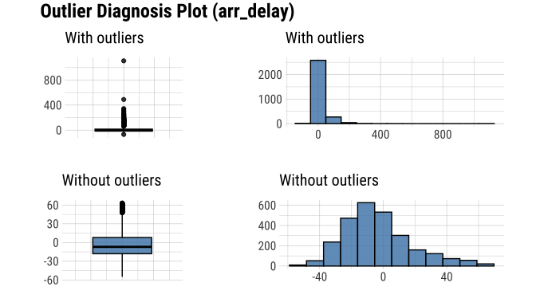
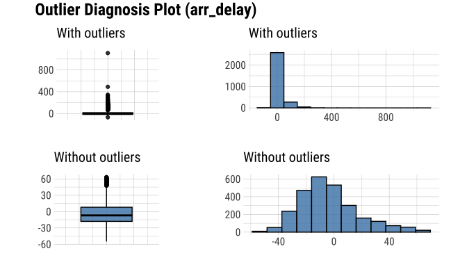
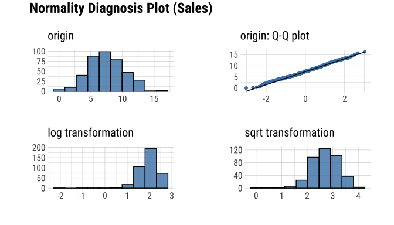
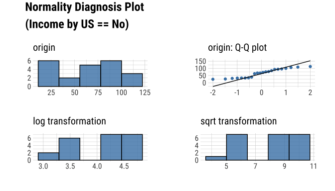
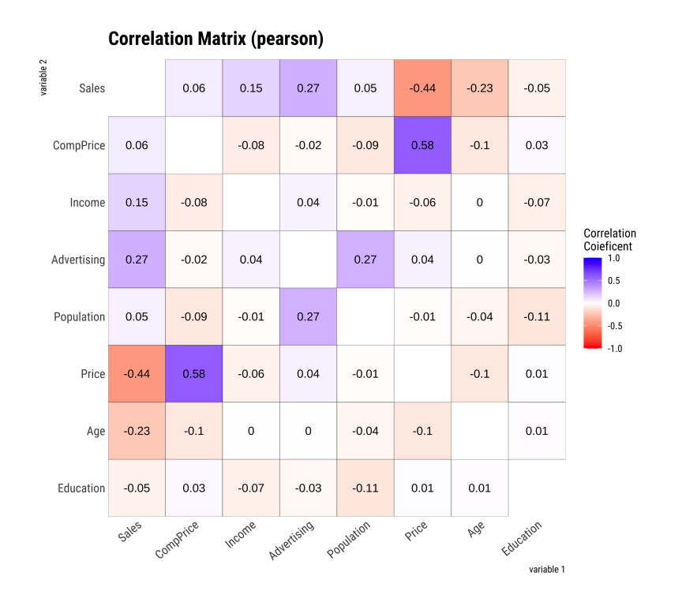
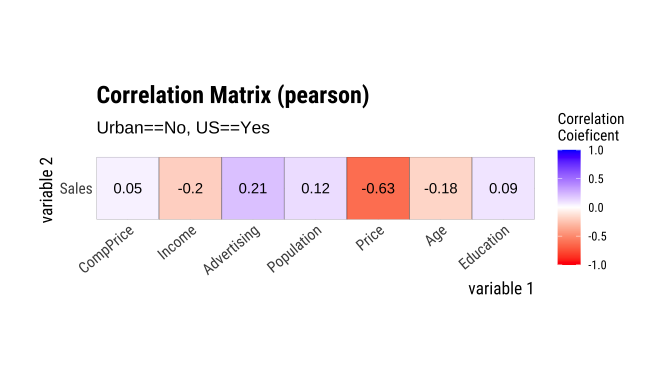
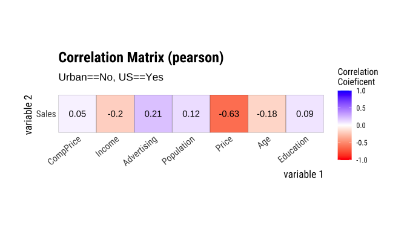
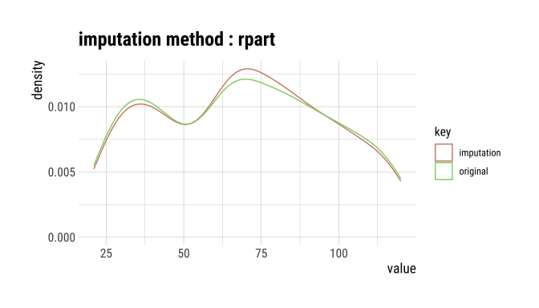
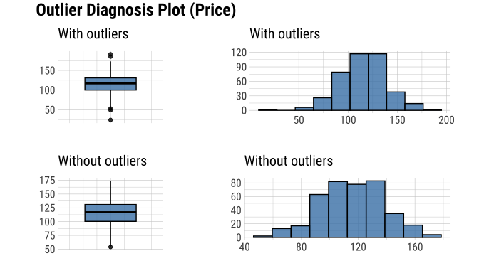
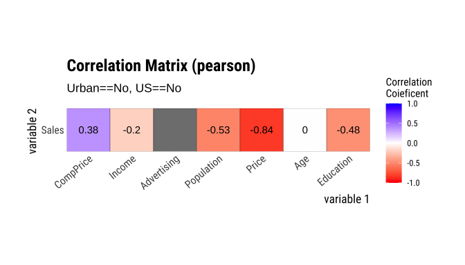

Overview
Diagnose, explore and transform data with dlookr.
Features:
- Diagnose data quality.
- Find appropriate scenarios to pursuit the follow-up analysis through data exploration and understanding.
- Derive new variables or perform variable transformations.
- Automatically generate reports for the above three tasks.
- Supports quality diagnosis and EDA of table of DBMS.
- version (≥ 0.3.2)
The name dlookr comes from
looking at the data in the data analysis process.
Install dlookr
The released version is available on CRAN
install.packages("dlookr")Or you can get the development version without vignettes from GitHub:
devtools::install_github("choonghyunryu/dlookr")Or you can get the development version with vignettes from GitHub:
install.packages(c("nycflights13", "ISLR", "DBI", "RSQLite"))
devtools::install_github("choonghyunryu/dlookr", build_vignettes = TRUE)Usage
dlookr includes several vignette files, which we use throughout the documentation.
Provided vignettes is as follows.
- Data quality diagnosis for data.frame, tbl_df, and table of DBMS
- Exploratory Data Analysis for data.frame, tbl_df, and table of DBMS
- Data Transformation
- Data diagnosis and EDA for table of DBMS
browseVignettes(package = "dlookr")Data quality diagnosis
Data: nycflights13
To illustrate basic use of the dlookr package, use the
flights data from the nycflights13 package.
Once loading nycflights13 library, the flights
data frame is available. The flights data frame contains
departure and arrival information on all flights departing from
NYC(i.e. JFK, LGA or EWR) in 2013.
library(nycflights13)
dim(flights)
#> [1] 336776 19
flights
#> # A tibble: 336,776 × 19
#> year month day dep_time sched_dep_time dep_delay arr_time sched_arr_time
#> <int> <int> <int> <int> <int> <dbl> <int> <int>
#> 1 2013 1 1 517 515 2 830 819
#> 2 2013 1 1 533 529 4 850 830
#> 3 2013 1 1 542 540 2 923 850
#> 4 2013 1 1 544 545 -1 1004 1022
#> 5 2013 1 1 554 600 -6 812 837
#> 6 2013 1 1 554 558 -4 740 728
#> 7 2013 1 1 555 600 -5 913 854
#> 8 2013 1 1 557 600 -3 709 723
#> 9 2013 1 1 557 600 -3 838 846
#> 10 2013 1 1 558 600 -2 753 745
#> # … with 336,766 more rows, and 11 more variables: arr_delay <dbl>,
#> # carrier <chr>, flight <int>, tailnum <chr>, origin <chr>, dest <chr>,
#> # air_time <dbl>, distance <dbl>, hour <dbl>, minute <dbl>, time_hour <dttm>General diagnosis of all variables with diagnose()
diagnose() allows you to diagnose variables on a data
frame. Like any other dplyr functions, the first argument
is the tibble (or data frame). The second and subsequent arguments refer
to variables within the data frame.
The variables of the tbl_df object returned by
diagnose () are as follows.
-
variables: variable names -
types: the data type of the variables -
missing_count: number of missing values -
missing_percent: percentage of missing values -
unique_count: number of unique values -
unique_rate: rate of unique value. unique_count / number of observation
For example, we can diagnose all variables in
flights:
library(dlookr)
library(dplyr)
diagnose(flights)
#> # A tibble: 19 × 6
#> variables types missing_count missing_percent unique_count unique_rate
#> <chr> <chr> <int> <dbl> <int> <dbl>
#> 1 year integer 0 0 1 0.00000297
#> 2 month integer 0 0 12 0.0000356
#> 3 day integer 0 0 31 0.0000920
#> 4 dep_time integer 8255 2.45 1319 0.00392
#> 5 sched_dep_time integer 0 0 1021 0.00303
#> 6 dep_delay numeric 8255 2.45 528 0.00157
#> 7 arr_time integer 8713 2.59 1412 0.00419
#> 8 sched_arr_time integer 0 0 1163 0.00345
#> 9 arr_delay numeric 9430 2.80 578 0.00172
#> 10 carrier charac… 0 0 16 0.0000475
#> 11 flight integer 0 0 3844 0.0114
#> 12 tailnum charac… 2512 0.746 4044 0.0120
#> 13 origin charac… 0 0 3 0.00000891
#> 14 dest charac… 0 0 105 0.000312
#> 15 air_time numeric 9430 2.80 510 0.00151
#> 16 distance numeric 0 0 214 0.000635
#> 17 hour numeric 0 0 20 0.0000594
#> 18 minute numeric 0 0 60 0.000178
#> 19 time_hour POSIXct 0 0 6936 0.0206-
Missing Value(NA): Variables with many missing values, i.e. those with amissing_percentclose to 100, should be excluded from the analysis. -
Unique value: Variables with a unique value (unique_count= 1) are considered to be excluded from data analysis. And if the data type is not numeric (integer, numeric) and the number of unique values is equal to the number of observations (unique_rate = 1), then the variable is likely to be an identifier. Therefore, this variable is also not suitable for the analysis model.
year can be considered not to be used in the analysis
model since unique_count is 1. However, you do not have to
remove it if you configure date as a combination of
year, month, and day.
For example, we can diagnose only a few selected variables:
# Select columns by name
diagnose(flights, year, month, day)
#> # A tibble: 3 × 6
#> variables types missing_count missing_percent unique_count unique_rate
#> <chr> <chr> <int> <dbl> <int> <dbl>
#> 1 year integer 0 0 1 0.00000297
#> 2 month integer 0 0 12 0.0000356
#> 3 day integer 0 0 31 0.0000920
# Select all columns between year and day (include)
diagnose(flights, year:day)
#> # A tibble: 3 × 6
#> variables types missing_count missing_percent unique_count unique_rate
#> <chr> <chr> <int> <dbl> <int> <dbl>
#> 1 year integer 0 0 1 0.00000297
#> 2 month integer 0 0 12 0.0000356
#> 3 day integer 0 0 31 0.0000920
# Select all columns except those from year to day (exclude)
diagnose(flights, -(year:day))
#> # A tibble: 16 × 6
#> variables types missing_count missing_percent unique_count unique_rate
#> <chr> <chr> <int> <dbl> <int> <dbl>
#> 1 dep_time integer 8255 2.45 1319 0.00392
#> 2 sched_dep_time integer 0 0 1021 0.00303
#> 3 dep_delay numeric 8255 2.45 528 0.00157
#> 4 arr_time integer 8713 2.59 1412 0.00419
#> 5 sched_arr_time integer 0 0 1163 0.00345
#> 6 arr_delay numeric 9430 2.80 578 0.00172
#> 7 carrier charac… 0 0 16 0.0000475
#> 8 flight integer 0 0 3844 0.0114
#> 9 tailnum charac… 2512 0.746 4044 0.0120
#> 10 origin charac… 0 0 3 0.00000891
#> 11 dest charac… 0 0 105 0.000312
#> 12 air_time numeric 9430 2.80 510 0.00151
#> 13 distance numeric 0 0 214 0.000635
#> 14 hour numeric 0 0 20 0.0000594
#> 15 minute numeric 0 0 60 0.000178
#> 16 time_hour POSIXct 0 0 6936 0.0206By using with dplyr, variables including missing values can be sorted by the weight of missing values.:
flights %>%
diagnose() %>%
select(-unique_count, -unique_rate) %>%
filter(missing_count > 0) %>%
arrange(desc(missing_count))
#> # A tibble: 6 × 4
#> variables types missing_count missing_percent
#> <chr> <chr> <int> <dbl>
#> 1 arr_delay numeric 9430 2.80
#> 2 air_time numeric 9430 2.80
#> 3 arr_time integer 8713 2.59
#> 4 dep_time integer 8255 2.45
#> 5 dep_delay numeric 8255 2.45
#> 6 tailnum character 2512 0.746Diagnosis of numeric variables with
diagnose_numeric()
diagnose_numeric() diagnoses numeric(continuous and
discrete) variables in a data frame. Usage is the same as
diagnose() but returns more diagnostic information.
However, if you specify a non-numeric variable in the second and
subsequent argument list, the variable is automatically ignored.
The variables of the tbl_df object returned by
diagnose_numeric() are as follows.
-
min: minimum value -
Q1: 1/4 quartile, 25th percentile -
mean: arithmetic mean -
median: median, 50th percentile -
Q3: 3/4 quartile, 75th percentile -
max: maximum value -
zero: number of observations with a value of 0 -
minus: number of observations with negative numbers -
outlier: number of outliers
The summary() function summarizes the distribution of individual
variables in the data frame and outputs it to the console. The summary
values of numeric variables are min, Q1,
mean, median, Q3 and
max, which help to understand the distribution of data.
However, the result displayed on the console has the disadvantage
that the analyst has to look at it with the eyes. However, when the
summary information is returned in a data frame structure such as
tbl_df, the scope of utilization is expanded.
diagnose_numeric() supports this.
zero, minus, and outlier are
useful measures to diagnose data integrity. For example, numerical data
in some cases cannot have zero or negative numbers. A numeric variable
called employee salary cannot have negative numbers or
zeros. Therefore, this variable should be checked for the inclusion of
zero or negative numbers in the data diagnosis process.
diagnose_numeric() can diagnose all numeric variables of
flights as follows.:
diagnose_numeric(flights)
#> # A tibble: 14 × 10
#> variables min Q1 mean median Q3 max zero minus outlier
#> <chr> <dbl> <dbl> <dbl> <dbl> <dbl> <dbl> <int> <int> <int>
#> 1 year 2013 2013 2013 2013 2013 2013 0 0 0
#> 2 month 1 4 6.55 7 10 12 0 0 0
#> 3 day 1 8 15.7 16 23 31 0 0 0
#> 4 dep_time 1 907 1349. 1401 1744 2400 0 0 0
#> 5 sched_dep_time 106 906 1344. 1359 1729 2359 0 0 0
#> 6 dep_delay -43 -5 12.6 -2 11 1301 16514 183575 43216
#> 7 arr_time 1 1104 1502. 1535 1940 2400 0 0 0
#> 8 sched_arr_time 1 1124 1536. 1556 1945 2359 0 0 0
#> 9 arr_delay -86 -17 6.90 -5 14 1272 5409 188933 27880
#> 10 flight 1 553 1972. 1496 3465 8500 0 0 1
#> 11 air_time 20 82 151. 129 192 695 0 0 5448
#> 12 distance 17 502 1040. 872 1389 4983 0 0 715
#> 13 hour 1 9 13.2 13 17 23 0 0 0
#> 14 minute 0 8 26.2 29 44 59 60696 0 0If a numeric variable can not logically have a negative or zero
value, it can be used with filter() to easily find a
variable that does not logically match:
diagnose_numeric(flights) %>%
filter(minus > 0 | zero > 0)
#> # A tibble: 3 × 10
#> variables min Q1 mean median Q3 max zero minus outlier
#> <chr> <dbl> <dbl> <dbl> <dbl> <dbl> <dbl> <int> <int> <int>
#> 1 dep_delay -43 -5 12.6 -2 11 1301 16514 183575 43216
#> 2 arr_delay -86 -17 6.90 -5 14 1272 5409 188933 27880
#> 3 minute 0 8 26.2 29 44 59 60696 0 0Diagnosis of categorical variables with
diagnose_category()
diagnose_category() diagnoses the categorical(factor,
ordered, character) variables of a data frame. The usage is similar to
diagnose() but returns more diagnostic information. If you
specify a non-categorical variable in the second and subsequent argument
list, the variable is automatically ignored.
The top argument specifies the number of levels to
return for each variable. The default is 10, which returns the top 10
level. Of course, if the number of levels is less than 10, all levels
are returned.
The variables of the tbl_df object returned by
diagnose_category() are as follows.
-
variables: variable names -
levels: level names -
N: number of observation -
freq: number of observation at the levels -
ratio: percentage of observation at the levels -
rank: rank of occupancy ratio of levels
`diagnose_category() can diagnose all categorical
variables of flights as follows.:
diagnose_category(flights)
#> # A tibble: 43 × 6
#> variables levels N freq ratio rank
#> <chr> <chr> <int> <int> <dbl> <int>
#> 1 carrier UA 336776 58665 17.4 1
#> 2 carrier B6 336776 54635 16.2 2
#> 3 carrier EV 336776 54173 16.1 3
#> 4 carrier DL 336776 48110 14.3 4
#> 5 carrier AA 336776 32729 9.72 5
#> 6 carrier MQ 336776 26397 7.84 6
#> 7 carrier US 336776 20536 6.10 7
#> 8 carrier 9E 336776 18460 5.48 8
#> 9 carrier WN 336776 12275 3.64 9
#> 10 carrier VX 336776 5162 1.53 10
#> # … with 33 more rowsIn collaboration with filter() in the dplyr
package, we can see that the tailnum variable is ranked in
top 1 with 2,512 missing values in the case where the missing value is
included in the top 10:
diagnose_category(flights) %>%
filter(is.na(levels))
#> # A tibble: 1 × 6
#> variables levels N freq ratio rank
#> <chr> <chr> <int> <int> <dbl> <int>
#> 1 tailnum <NA> 336776 2512 0.746 1The following example returns a list where the level’s relative
percentage is 0.01% or less. Note that the value of the top
argument is set to a large value such as 500. If the default value of 10
was used, values below 0.01% would not be included in the list:
flights %>%
diagnose_category(top = 500) %>%
filter(ratio <= 0.01)
#> # A tibble: 10 × 6
#> variables levels N freq ratio rank
#> <chr> <chr> <int> <int> <dbl> <int>
#> 1 carrier OO 336776 32 0.00950 16
#> 2 dest JAC 336776 25 0.00742 97
#> 3 dest PSP 336776 19 0.00564 98
#> 4 dest EYW 336776 17 0.00505 99
#> 5 dest HDN 336776 15 0.00445 100
#> 6 dest MTJ 336776 15 0.00445 100
#> 7 dest SBN 336776 10 0.00297 102
#> 8 dest ANC 336776 8 0.00238 103
#> 9 dest LEX 336776 1 0.000297 104
#> 10 dest LGA 336776 1 0.000297 104In the analytics model, you can also consider removing levels where the relative frequency is very small in the observations or, if possible, combining them together.
Diagnosing outliers with diagnose_outlier()
diagnose_outlier() diagnoses the outliers of the numeric
(continuous and discrete) variables of the data frame. The usage is the
same as diagnose().
The variables of the tbl_df object returned by
diagnose_outlier() are as follows.
-
outliers_cnt: number of outliers -
outliers_ratio: percent of outliers -
outliers_mean: arithmetic average of outliers -
with_mean: arithmetic average of with outliers -
without_mean: arithmetic average of without outliers
diagnose_outlier() can diagnose outliers of all
numerical variables on flights as follows:
diagnose_outlier(flights)
#> # A tibble: 14 × 6
#> variables outliers_cnt outliers_ratio outliers_mean with_mean without_mean
#> <chr> <int> <dbl> <dbl> <dbl> <dbl>
#> 1 year 0 0 NaN 2013 2013
#> 2 month 0 0 NaN 6.55 6.55
#> 3 day 0 0 NaN 15.7 15.7
#> 4 dep_time 0 0 NaN 1349. 1349.
#> 5 sched_dep_t… 0 0 NaN 1344. 1344.
#> 6 dep_delay 43216 12.8 93.1 12.6 0.444
#> 7 arr_time 0 0 NaN 1502. 1502.
#> 8 sched_arr_t… 0 0 NaN 1536. 1536.
#> 9 arr_delay 27880 8.28 121. 6.90 -3.69
#> 10 flight 1 0.000297 8500 1972. 1972.
#> 11 air_time 5448 1.62 400. 151. 146.
#> 12 distance 715 0.212 4955. 1040. 1032.
#> 13 hour 0 0 NaN 13.2 13.2
#> 14 minute 0 0 NaN 26.2 26.2Numeric variables that contained outliers are easily found with
filter().:
diagnose_outlier(flights) %>%
filter(outliers_cnt > 0)
#> # A tibble: 5 × 6
#> variables outliers_cnt outliers_ratio outliers_mean with_mean without_mean
#> <chr> <int> <dbl> <dbl> <dbl> <dbl>
#> 1 dep_delay 43216 12.8 93.1 12.6 0.444
#> 2 arr_delay 27880 8.28 121. 6.90 -3.69
#> 3 flight 1 0.000297 8500 1972. 1972.
#> 4 air_time 5448 1.62 400. 151. 146.
#> 5 distance 715 0.212 4955. 1040. 1032.The following example finds a numeric variable with an outlier ratio of 5% or more, and then returns the result of dividing mean of outliers by total mean in descending order:
diagnose_outlier(flights) %>%
filter(outliers_ratio > 5) %>%
mutate(rate = outliers_mean / with_mean) %>%
arrange(desc(rate)) %>%
select(-outliers_cnt)
#> # A tibble: 2 × 6
#> variables outliers_ratio outliers_mean with_mean without_mean rate
#> <chr> <dbl> <dbl> <dbl> <dbl> <dbl>
#> 1 arr_delay 8.28 121. 6.90 -3.69 17.5
#> 2 dep_delay 12.8 93.1 12.6 0.444 7.37In cases where the mean of the outliers is large relative to the overall average, it may be desirable to impute or remove the outliers.
Visualization of outliers using plot_outlier()
plot_outlier() visualizes outliers of numerical
variables(continuous and discrete) of data.frame. Usage is the same
diagnose().
The plot derived from the numerical data diagnosis is as follows.
- With outliers box plot
- Without outliers box plot
- With outliers histogram
- Without outliers histogram
The following example uses diagnose_outlier(),
plot_outlier(), and dplyr packages to
visualize all numerical variables with an outlier ratio of 0.5% or
higher.
flights %>%
plot_outlier(diagnose_outlier(flights) %>%
filter(outliers_ratio >= 0.5) %>%
select(variables) %>%
unlist()) 

Analysts should look at the results of the visualization to decide whether to remove or replace outliers. In some cases, you should consider removing variables with outliers from the data analysis model.
Looking at the results of the visualization, arr_delay
shows that the observed values without outliers are similar to the
normal distribution. In the case of a linear model, we might consider
removing or imputing outliers. And air_time has a similar
shape before and after removing outliers.
Exploratory Data Analysis
datasets
To illustrate the basic use of EDA in the dlookr package, I use a
Carseats dataset. Carseats in the
ISLR package is a simulated data set containing sales of
child car seats at 400 different stores. This data is a data.frame
created for the purpose of predicting sales volume.
library(ISLR)
str(Carseats)
#> 'data.frame': 400 obs. of 11 variables:
#> $ Sales : num 9.5 11.22 10.06 7.4 4.15 ...
#> $ CompPrice : num 138 111 113 117 141 124 115 136 132 132 ...
#> $ Income : num 73 48 35 100 64 113 105 81 110 113 ...
#> $ Advertising: num 11 16 10 4 3 13 0 15 0 0 ...
#> $ Population : num 276 260 269 466 340 501 45 425 108 131 ...
#> $ Price : num 120 83 80 97 128 72 108 120 124 124 ...
#> $ ShelveLoc : Factor w/ 3 levels "Bad","Good","Medium": 1 2 3 3 1 1 3 2 3 3 ...
#> $ Age : num 42 65 59 55 38 78 71 67 76 76 ...
#> $ Education : num 17 10 12 14 13 16 15 10 10 17 ...
#> $ Urban : Factor w/ 2 levels "No","Yes": 2 2 2 2 2 1 2 2 1 1 ...
#> $ US : Factor w/ 2 levels "No","Yes": 2 2 2 2 1 2 1 2 1 2 ...The contents of individual variables are as follows. (Refer to ISLR::Carseats Man page)
- Sales
- Unit sales (in thousands) at each location
- CompPrice
- Price charged by competitor at each location
- Income
- Community income level (in thousands of dollars)
- Advertising
- Local advertising budget for company at each location (in thousands of dollars)
- Population
- Population size in region (in thousands)
- Price
- Price company charges for car seats at each site
- ShelveLoc
- A factor with levels Bad, Good and Medium indicating the quality of the shelving location for the car seats at each site
- Age
- Average age of the local population
- Education
- Education level at each location
- Urban
- A factor with levels No and Yes to indicate whether the store is in an urban or rural location
- US
- A factor with levels No and Yes to indicate whether the store is in the US or not
When data analysis is performed, data containing missing values is
frequently encountered. However, ‘Carseats’ is complete data without
missing values. So the following script created the missing values and
saved them as carseats.
carseats <- ISLR::Carseats
suppressWarnings(RNGversion("3.5.0"))
set.seed(123)
carseats[sample(seq(NROW(carseats)), 20), "Income"] <- NA
suppressWarnings(RNGversion("3.5.0"))
set.seed(456)
carseats[sample(seq(NROW(carseats)), 10), "Urban"] <- NAUnivariate data EDA
Calculating descriptive statistics using
describe()
describe() computes descriptive statistics for numerical
data. The descriptive statistics help determine the distribution of
numerical variables. Like function of dplyr, the first argument is the
tibble (or data frame). The second and subsequent arguments refer to
variables within that data frame.
The variables of the tbl_df object returned by
describe() are as follows.
-
n: number of observations excluding missing values -
na: number of missing values -
mean: arithmetic average -
sd: standard deviation -
se_mean: standard error mean. sd/sqrt(n) -
IQR: interquartile range (Q3-Q1) -
skewness: skewness -
kurtosis: kurtosis -
p25: Q1. 25% percentile -
p50: median. 50% percentile -
p75: Q3. 75% percentile -
p01,p05,p10,p20,p30: 1%, 5%, 20%, 30% percentiles -
p40,p60,p70,p80: 40%, 60%, 70%, 80% percentiles -
p90,p95,p99,p100: 90%, 95%, 99%, 100% percentiles
For example, we can computes the statistics of all numerical
variables in carseats:
describe(carseats)
#> # A tibble: 8 × 26
#> described_variables n na mean sd se_mean IQR skewness kurtosis
#> <chr> <int> <int> <dbl> <dbl> <dbl> <dbl> <dbl> <dbl>
#> 1 Sales 400 0 7.50 2.82 0.141 3.93 0.186 -0.0809
#> 2 CompPrice 400 0 125. 15.3 0.767 20 -0.0428 0.0417
#> 3 Income 380 20 68.9 28.1 1.44 48.2 0.0449 -1.09
#> 4 Advertising 400 0 6.64 6.65 0.333 12 0.640 -0.545
#> 5 Population 400 0 265. 147. 7.37 260. -0.0512 -1.20
#> 6 Price 400 0 116. 23.7 1.18 31 -0.125 0.452
#> 7 Age 400 0 53.3 16.2 0.810 26.2 -0.0772 -1.13
#> 8 Education 400 0 13.9 2.62 0.131 4 0.0440 -1.30
#> # … with 17 more variables: p00 <dbl>, p01 <dbl>, p05 <dbl>, p10 <dbl>,
#> # p20 <dbl>, p25 <dbl>, p30 <dbl>, p40 <dbl>, p50 <dbl>, p60 <dbl>,
#> # p70 <dbl>, p75 <dbl>, p80 <dbl>, p90 <dbl>, p95 <dbl>, p99 <dbl>,
#> # p100 <dbl>-
skewness: The left-skewed distribution data that is the variables with large positive skewness should consider the log or sqrt transformations to follow the normal distribution. The variablesAdvertisingseem to need to consider variable transformation. -
meanandsd,se_mean: ThePopulationwith a largestandard error of the mean(se_mean) has low representativeness of thearithmetic mean(mean). Thestandard deviation(sd) is much larger than the arithmetic average.
The describe() function can be sorted by
left or right skewed size(skewness) using
dplyr.:
carseats %>%
describe() %>%
select(described_variables, skewness, mean, p25, p50, p75) %>%
filter(!is.na(skewness)) %>%
arrange(desc(abs(skewness)))
#> # A tibble: 8 × 6
#> described_variables skewness mean p25 p50 p75
#> <chr> <dbl> <dbl> <dbl> <dbl> <dbl>
#> 1 Advertising 0.640 6.64 0 5 12
#> 2 Sales 0.186 7.50 5.39 7.49 9.32
#> 3 Price -0.125 116. 100 117 131
#> 4 Age -0.0772 53.3 39.8 54.5 66
#> 5 Population -0.0512 265. 139 272 398.
#> 6 Income 0.0449 68.9 42.8 69 91
#> 7 Education 0.0440 13.9 12 14 16
#> 8 CompPrice -0.0428 125. 115 125 135The describe() function supports the
group_by() function syntax of the dplyr
package.
carseats %>%
group_by(US) %>%
describe(Sales, Income)
#> # A tibble: 4 × 27
#> described_varia… US n na mean sd se_mean IQR skewness kurtosis
#> <chr> <fct> <int> <int> <dbl> <dbl> <dbl> <dbl> <dbl> <dbl>
#> 1 Income No 130 12 65.8 28.2 2.48 50 0.100 -1.14
#> 2 Income Yes 250 8 70.4 27.9 1.77 48 0.0199 -1.06
#> 3 Sales No 142 0 6.82 2.60 0.218 3.44 0.323 0.808
#> 4 Sales Yes 258 0 7.87 2.88 0.179 4.23 0.0760 -0.326
#> # … with 17 more variables: p00 <dbl>, p01 <dbl>, p05 <dbl>, p10 <dbl>,
#> # p20 <dbl>, p25 <dbl>, p30 <dbl>, p40 <dbl>, p50 <dbl>, p60 <dbl>,
#> # p70 <dbl>, p75 <dbl>, p80 <dbl>, p90 <dbl>, p95 <dbl>, p99 <dbl>,
#> # p100 <dbl>
carseats %>%
group_by(US, Urban) %>%
describe(Sales, Income)
#> # A tibble: 12 × 28
#> described_variab… US Urban n na mean sd se_mean IQR skewness
#> <chr> <fct> <fct> <int> <int> <dbl> <dbl> <dbl> <dbl> <dbl>
#> 1 Income No No 42 4 60.2 29.1 4.49 45.2 0.408
#> 2 Income No Yes 84 8 69.5 27.4 2.99 47 -0.0497
#> 3 Income No <NA> 4 0 48.2 24.7 12.3 40.8 -0.0496
#> 4 Income Yes No 65 4 70.5 29.9 3.70 48 0.0736
#> 5 Income Yes Yes 179 4 70.3 27.2 2.03 46.5 0.00490
#> 6 Income Yes <NA> 6 0 75.3 34.3 14.0 47.2 -0.412
#> 7 Sales No No 46 0 6.46 2.72 0.402 3.15 0.0889
#> 8 Sales No Yes 92 0 7.00 2.58 0.269 3.49 0.492
#> 9 Sales No <NA> 4 0 6.99 1.28 0.639 0.827 1.69
#> 10 Sales Yes No 69 0 8.23 2.65 0.319 4.1 -0.0212
#> 11 Sales Yes Yes 183 0 7.74 2.97 0.219 4.11 0.123
#> 12 Sales Yes <NA> 6 0 7.61 2.61 1.06 3.25 0.489
#> # … with 18 more variables: kurtosis <dbl>, p00 <dbl>, p01 <dbl>, p05 <dbl>,
#> # p10 <dbl>, p20 <dbl>, p25 <dbl>, p30 <dbl>, p40 <dbl>, p50 <dbl>,
#> # p60 <dbl>, p70 <dbl>, p75 <dbl>, p80 <dbl>, p90 <dbl>, p95 <dbl>,
#> # p99 <dbl>, p100 <dbl>Test of normality on numeric variables using
normality()
normality() performs a normality test on numerical data.
Shapiro-Wilk normality test is performed. When the number
of observations is greater than 5000, it is tested after extracting 5000
samples by random simple sampling.
The variables of tbl_df object returned by
normality() are as follows.
-
statistic: Statistics of the Shapiro-Wilk test -
p_value: p-value of the Shapiro-Wilk test -
sample: Number of sample observations performed Shapiro-Wilk test
normality() performs the normality test for all
numerical variables of carseats as follows.:
normality(carseats)
#> # A tibble: 8 × 4
#> vars statistic p_value sample
#> <chr> <dbl> <dbl> <dbl>
#> 1 Sales 0.995 2.54e- 1 400
#> 2 CompPrice 0.998 9.77e- 1 400
#> 3 Income 0.961 1.52e- 8 400
#> 4 Advertising 0.874 1.49e-17 400
#> 5 Population 0.952 4.08e-10 400
#> 6 Price 0.996 3.90e- 1 400
#> 7 Age 0.957 1.86e- 9 400
#> 8 Education 0.924 2.43e-13 400You can use dplyr to sort variables that do not follow a
normal distribution in order of p_value:
carseats %>%
normality() %>%
filter(p_value <= 0.01) %>%
arrange(abs(p_value))
#> # A tibble: 5 × 4
#> vars statistic p_value sample
#> <chr> <dbl> <dbl> <dbl>
#> 1 Advertising 0.874 1.49e-17 400
#> 2 Education 0.924 2.43e-13 400
#> 3 Population 0.952 4.08e-10 400
#> 4 Age 0.957 1.86e- 9 400
#> 5 Income 0.961 1.52e- 8 400In particular, the Advertising variable is considered to
be the most out of the normal distribution.
The normality() function supports the
group_by() function syntax in the dplyr
package.
carseats %>%
group_by(ShelveLoc, US) %>%
normality(Income) %>%
arrange(desc(p_value))
#> # A tibble: 6 × 6
#> variable ShelveLoc US statistic p_value sample
#> <chr> <fct> <fct> <dbl> <dbl> <dbl>
#> 1 Income Bad No 0.969 0.470 34
#> 2 Income Bad Yes 0.958 0.0343 62
#> 3 Income Good No 0.902 0.0328 24
#> 4 Income Good Yes 0.955 0.0296 61
#> 5 Income Medium No 0.947 0.00319 84
#> 6 Income Medium Yes 0.961 0.000948 135The Income variable does not follow the normal
distribution. However, the case where US is No
and ShelveLoc is Good and Bad at
the significance level of 0.01, it follows the normal distribution.
The following example performs
normality test of log(Income) for each combination of
ShelveLoc and US categorical variables to
search for variables that follow the normal distribution.
Visualization of normality of numerical variables using
plot_normality()
plot_normality() visualizes the normality of numeric
data.
The information that plot_normality() visualizes is as
follows.
Histogram of original dataQ-Q plot of original datahistogram of log transformed dataHistogram of square root transformed data
In the data analysis process, it often encounters numerical data that
follows the power-law distribution. Since the numerical
data that follows the power-law distribution is converted
into a normal distribution by performing the log or
sqrt transformation, so draw a histogram of the
log and sqrt transformed data.
plot_normality() can also specify several variables like
normality() function.
# Select columns by name
plot_normality(carseats, Sales, CompPrice)
The plot_normality() function also supports the
group_by() function syntax in the dplyr
package.

EDA of bivariate data
Calculation of correlation coefficient using
correlate()
correlate() calculates the correlation coefficient of
all combinations of carseats numerical variables as
follows:
correlate(carseats)
#> # A tibble: 56 × 3
#> var1 var2 coef_corr
#> <fct> <fct> <dbl>
#> 1 CompPrice Sales 0.0641
#> 2 Income Sales 0.151
#> 3 Advertising Sales 0.270
#> 4 Population Sales 0.0505
#> 5 Price Sales -0.445
#> 6 Age Sales -0.232
#> 7 Education Sales -0.0520
#> 8 Sales CompPrice 0.0641
#> 9 Income CompPrice -0.0761
#> 10 Advertising CompPrice -0.0242
#> # … with 46 more rowsThe following example performs a normality test only on combinations that include several selected variables.
# Select columns by name
correlate(carseats, Sales, CompPrice, Income)
#> # A tibble: 21 × 3
#> var1 var2 coef_corr
#> <fct> <fct> <dbl>
#> 1 CompPrice Sales 0.0641
#> 2 Income Sales 0.151
#> 3 Sales CompPrice 0.0641
#> 4 Income CompPrice -0.0761
#> 5 Sales Income 0.151
#> 6 CompPrice Income -0.0761
#> 7 Sales Advertising 0.270
#> 8 CompPrice Advertising -0.0242
#> 9 Income Advertising 0.0435
#> 10 Sales Population 0.0505
#> # … with 11 more rowscorrelate() produces
two pairs of variables. So the following example uses
filter() to get the correlation coefficient for
a pair of variable combinations:
carseats %>%
correlate(Sales:Income) %>%
filter(as.integer(var1) > as.integer(var2))
#> # A tibble: 3 × 3
#> var1 var2 coef_corr
#> <fct> <fct> <dbl>
#> 1 CompPrice Sales 0.0641
#> 2 Income Sales 0.151
#> 3 Income CompPrice -0.0761The correlate() also supports the
group_by() function syntax in the dplyr
package.
carseats %>%
filter(ShelveLoc == "Good") %>%
group_by(Urban, US) %>%
correlate(Sales) %>%
filter(abs(coef_corr) > 0.5)
#> # A tibble: 10 × 5
#> Urban US var1 var2 coef_corr
#> <fct> <fct> <fct> <fct> <dbl>
#> 1 No No Sales Population -0.530
#> 2 No No Sales Price -0.838
#> 3 No Yes Sales Price -0.630
#> 4 Yes No Sales Price -0.833
#> 5 Yes No Sales Age -0.649
#> 6 Yes Yes Sales Price -0.619
#> 7 <NA> Yes Sales CompPrice 0.858
#> 8 <NA> Yes Sales Population -0.806
#> 9 <NA> Yes Sales Price -0.901
#> 10 <NA> Yes Sales Age -0.984Visualization of the correlation matrix using
plot.correlate()
plot.correlate() visualizes the correlation matrix.

plot.correlate() can also specify multiple variables
with correlate() function. The following is a visualization
of the correlation matrix including several selected variables.

The plot.correlate() function also supports the
group_by() function syntax in the dplyr
package.
 


EDA based on target variable
Definition of target variable
To perform EDA based on target variable, you need to
create a target_by class object. target_by()
creates a target_by class with an object inheriting
data.frame or data.frame. target_by() is similar to
group_by() in dplyr which creates
grouped_df. The difference is that you specify only one
variable.
The following is an example of specifying US as target
variable in carseats data.frame.:
categ <- target_by(carseats, US)EDA when target variable is categorical variable
Let’s perform EDA when the target variable is a categorical variable.
When the categorical variable US is the target variable, we
examine the relationship between the target variable and the
predictor.
Cases where predictors are numeric variable:
relate() shows the relationship between the target
variable and the predictor. The following example shows the relationship
between Sales and the target variable US. The
predictor Sales is a numeric variable. In this case, the
descriptive statistics are shown for each level of the target
variable.
# If the variable of interest is a numerical variable
cat_num <- relate(categ, Sales)
cat_num
#> # A tibble: 3 × 27
#> described_varia… US n na mean sd se_mean IQR skewness kurtosis
#> <chr> <fct> <int> <int> <dbl> <dbl> <dbl> <dbl> <dbl> <dbl>
#> 1 Sales No 142 0 6.82 2.60 0.218 3.44 0.323 0.808
#> 2 Sales Yes 258 0 7.87 2.88 0.179 4.23 0.0760 -0.326
#> 3 Sales total 400 0 7.50 2.82 0.141 3.93 0.186 -0.0809
#> # … with 17 more variables: p00 <dbl>, p01 <dbl>, p05 <dbl>, p10 <dbl>,
#> # p20 <dbl>, p25 <dbl>, p30 <dbl>, p40 <dbl>, p50 <dbl>, p60 <dbl>,
#> # p70 <dbl>, p75 <dbl>, p80 <dbl>, p90 <dbl>, p95 <dbl>, p99 <dbl>,
#> # p100 <dbl>
summary(cat_num)
#> described_variables US n na mean
#> Length:3 No :1 Min. :142.0 Min. :0 Min. :6.823
#> Class :character Yes :1 1st Qu.:200.0 1st Qu.:0 1st Qu.:7.160
#> Mode :character total:1 Median :258.0 Median :0 Median :7.496
#> Mean :266.7 Mean :0 Mean :7.395
#> 3rd Qu.:329.0 3rd Qu.:0 3rd Qu.:7.682
#> Max. :400.0 Max. :0 Max. :7.867
#> sd se_mean IQR skewness
#> Min. :2.603 Min. :0.1412 Min. :3.442 Min. :0.07603
#> 1st Qu.:2.713 1st Qu.:0.1602 1st Qu.:3.686 1st Qu.:0.13080
#> Median :2.824 Median :0.1791 Median :3.930 Median :0.18556
#> Mean :2.768 Mean :0.1796 Mean :3.866 Mean :0.19489
#> 3rd Qu.:2.851 3rd Qu.:0.1988 3rd Qu.:4.077 3rd Qu.:0.25432
#> Max. :2.877 Max. :0.2184 Max. :4.225 Max. :0.32308
#> kurtosis p00 p01 p05
#> Min. :-0.32638 Min. :0.0000 Min. :0.4675 Min. :3.147
#> 1st Qu.:-0.20363 1st Qu.:0.0000 1st Qu.:0.6868 1st Qu.:3.148
#> Median :-0.08088 Median :0.0000 Median :0.9062 Median :3.149
#> Mean : 0.13350 Mean :0.1233 Mean :1.0072 Mean :3.183
#> 3rd Qu.: 0.36344 3rd Qu.:0.1850 3rd Qu.:1.2771 3rd Qu.:3.200
#> Max. : 0.80776 Max. :0.3700 Max. :1.6480 Max. :3.252
#> p10 p20 p25 p30
#> Min. :3.917 Min. :4.754 Min. :5.080 Min. :5.306
#> 1st Qu.:4.018 1st Qu.:4.910 1st Qu.:5.235 1st Qu.:5.587
#> Median :4.119 Median :5.066 Median :5.390 Median :5.867
#> Mean :4.073 Mean :5.051 Mean :5.411 Mean :5.775
#> 3rd Qu.:4.152 3rd Qu.:5.199 3rd Qu.:5.576 3rd Qu.:6.010
#> Max. :4.184 Max. :5.332 Max. :5.763 Max. :6.153
#> p40 p50 p60 p70
#> Min. :5.994 Min. :6.660 Min. :7.496 Min. :7.957
#> 1st Qu.:6.301 1st Qu.:7.075 1st Qu.:7.787 1st Qu.:8.386
#> Median :6.608 Median :7.490 Median :8.078 Median :8.815
#> Mean :6.506 Mean :7.313 Mean :8.076 Mean :8.740
#> 3rd Qu.:6.762 3rd Qu.:7.640 3rd Qu.:8.366 3rd Qu.:9.132
#> Max. :6.916 Max. :7.790 Max. :8.654 Max. :9.449
#> p75 p80 p90 p95
#> Min. :8.523 Min. : 8.772 Min. : 9.349 Min. :11.28
#> 1st Qu.:8.921 1st Qu.: 9.265 1st Qu.:10.325 1st Qu.:11.86
#> Median :9.320 Median : 9.758 Median :11.300 Median :12.44
#> Mean :9.277 Mean : 9.665 Mean :10.795 Mean :12.08
#> 3rd Qu.:9.654 3rd Qu.:10.111 3rd Qu.:11.518 3rd Qu.:12.49
#> Max. :9.988 Max. :10.464 Max. :11.736 Max. :12.54
#> p99 p100
#> Min. :13.64 Min. :14.90
#> 1st Qu.:13.78 1st Qu.:15.59
#> Median :13.91 Median :16.27
#> Mean :13.86 Mean :15.81
#> 3rd Qu.:13.97 3rd Qu.:16.27
#> Max. :14.03 Max. :16.27plot() visualizes the relate class object
created by relate() as the relationship between the target
variable and the predictor variable. The relationship between
US and Sales is visualized by density
plot.
plot(cat_num)
Cases where predictors are categorical variable:
The following example shows the relationship between
ShelveLoc and the target variable US. The
predictor variable ShelveLoc is a categorical variable. In
this case, it shows the contingency table of two variables.
The summary() function performs
independence test on the contingency table.
# If the variable of interest is a categorical variable
cat_cat <- relate(categ, ShelveLoc)
cat_cat
#> ShelveLoc
#> US Bad Good Medium
#> No 34 24 84
#> Yes 62 61 135
summary(cat_cat)
#> Call: xtabs(formula = formula_str, data = data, addNA = TRUE)
#> Number of cases in table: 400
#> Number of factors: 2
#> Test for independence of all factors:
#> Chisq = 2.7397, df = 2, p-value = 0.2541plot() visualizes the relationship between the target
variable and the predictor. The relationship between US and
ShelveLoc is represented by a
mosaics plot.
plot(cat_cat)EDA when target variable is numerical variable
Let’s perform EDA when the target variable is numeric. When the
numeric variable Sales is the target variable, we examine
the relationship between the target variable and the predictor.
# If the variable of interest is a numerical variable
num <- target_by(carseats, Sales)Cases where predictors are numeric variable:
The following example shows the relationship between
Price and the target variable Sales. The
predictor variable Price is a numeric variable. In this
case, it shows the result of a simple linear model of the
target ~ predictor formula. The summary()
function expresses the details of the model.
# If the variable of interest is a numerical variable
num_num <- relate(num, Price)
num_num
#>
#> Call:
#> lm(formula = formula_str, data = data)
#>
#> Coefficients:
#> (Intercept) Price
#> 13.64192 -0.05307
summary(num_num)
#>
#> Call:
#> lm(formula = formula_str, data = data)
#>
#> Residuals:
#> Min 1Q Median 3Q Max
#> -6.5224 -1.8442 -0.1459 1.6503 7.5108
#>
#> Coefficients:
#> Estimate Std. Error t value Pr(>|t|)
#> (Intercept) 13.641915 0.632812 21.558 <2e-16 ***
#> Price -0.053073 0.005354 -9.912 <2e-16 ***
#> ---
#> Signif. codes: 0 '***' 0.001 '**' 0.01 '*' 0.05 '.' 0.1 ' ' 1
#>
#> Residual standard error: 2.532 on 398 degrees of freedom
#> Multiple R-squared: 0.198, Adjusted R-squared: 0.196
#> F-statistic: 98.25 on 1 and 398 DF, p-value: < 2.2e-16plot() visualizes the relationship between the target
and predictor variables. The relationship between Sales and
Price is visualized with a scatter plot. The figure on the
left shows the scatter plot of Sales and Price
and the confidence interval of the regression line and regression line.
The figure on the right shows the relationship between the original data
and the predicted values of the linear model as a scatter plot. If there
is a linear relationship between the two variables, the scatter plot of
the observations converges on the red diagonal line.
plot(num_num)Cases where predictors are categorical variable:
The following example shows the relationship between
ShelveLoc and the target variable Sales. The
predictor ShelveLoc is a categorical variable and shows the
result of one-way ANOVA of target ~ predictor
relationship. The results are expressed in terms of ANOVA. The
summary() function shows the
regression coefficients for each level of the predictor. In
other words, it shows detailed information about
simple regression analysis of
target ~ predictor relationship.
# If the variable of interest is a categorical variable
num_cat <- relate(num, ShelveLoc)
num_cat
#> Analysis of Variance Table
#>
#> Response: Sales
#> Df Sum Sq Mean Sq F value Pr(>F)
#> ShelveLoc 2 1009.5 504.77 92.23 < 2.2e-16 ***
#> Residuals 397 2172.7 5.47
#> ---
#> Signif. codes: 0 '***' 0.001 '**' 0.01 '*' 0.05 '.' 0.1 ' ' 1
summary(num_cat)
#>
#> Call:
#> lm(formula = formula(formula_str), data = data)
#>
#> Residuals:
#> Min 1Q Median 3Q Max
#> -7.3066 -1.6282 -0.0416 1.5666 6.1471
#>
#> Coefficients:
#> Estimate Std. Error t value Pr(>|t|)
#> (Intercept) 5.5229 0.2388 23.131 < 2e-16 ***
#> ShelveLocGood 4.6911 0.3484 13.464 < 2e-16 ***
#> ShelveLocMedium 1.7837 0.2864 6.229 1.2e-09 ***
#> ---
#> Signif. codes: 0 '***' 0.001 '**' 0.01 '*' 0.05 '.' 0.1 ' ' 1
#>
#> Residual standard error: 2.339 on 397 degrees of freedom
#> Multiple R-squared: 0.3172, Adjusted R-squared: 0.3138
#> F-statistic: 92.23 on 2 and 397 DF, p-value: < 2.2e-16plot() visualizes the relationship between the target
variable and the predictor. The relationship between Sales
and ShelveLoc is represented by a
box plot.
plot(num_cat)Data Transformation
dlookr imputes missing values and outliers and resolves skewed data. It also provides the ability to bin continuous variables as categorical variables.
Here is a list of the data conversion functions and functions provided by dlookr:
-
find_na()finds a variable that contains the missing values variable, andimputate_na()imputes the missing values. -
find_outliers()finds a variable that contains the outliers, andimputate_outlier()imputes the outlier. -
summary.imputation()andplot.imputation()provide information and visualization of the imputed variables. -
find_skewness()finds the variables of the skewed data, andtransform()performs the resolving of the skewed data. -
transform()also performs standardization of numeric variables. -
summary.transform()andplot.transform()provide information and visualization of transformed variables. -
binning()andbinning_by()convert binational data into categorical data. -
print.bins()andsummary.bins()show and summarize the binning results. -
plot.bins()andplot.optimal_bins()provide visualization of the binning result. -
transformation_report()performs the data transform and reports the result.
Imputation of missing values
imputes the missing value with imputate_na()
imputate_na() imputes the missing value contained in the
variable. The predictor with missing values support both numeric and
categorical variables, and supports the following
method.
- predictor is numerical variable
- “mean” : arithmetic mean
- “median” : median
- “mode” : mode
- “knn” : K-nearest neighbors
- target variable must be specified
- “rpart” : Recursive Partitioning and Regression Trees
- target variable must be specified
- target variable must be specified
- “mice” : Multivariate Imputation by Chained Equations
- target variable must be specified
- random seed must be set
- target variable must be specified
- predictor is categorical variable
- “mode” : mode
- “rpart” : Recursive Partitioning and Regression Trees
- target variable must be specified
- target variable must be specified
- “mice” : Multivariate Imputation by Chained Equations
- target variable must be specified
- random seed must be set
- target variable must be specified
In the following example, imputate_na() imputes the
missing value of Income, a numeric variable of carseats,
using the “rpart” method. summary() summarizes missing
value imputation information, and plot() visualizes missing
information.
income <- imputate_na(carseats, Income, US, method = "rpart")
# result of imputation
income
#> [1] 73.00000 48.00000 35.00000 100.00000 64.00000 113.00000 105.00000
#> [8] 81.00000 110.00000 113.00000 78.00000 94.00000 35.00000 28.00000
#> [15] 117.00000 95.00000 76.75000 68.70968 110.00000 76.00000 90.00000
#> [22] 29.00000 46.00000 31.00000 119.00000 32.00000 115.00000 118.00000
#> [29] 74.00000 99.00000 94.00000 58.00000 32.00000 38.00000 54.00000
#> [36] 84.00000 76.00000 41.00000 73.00000 69.27778 98.00000 53.00000
#> [43] 69.00000 42.00000 79.00000 63.00000 90.00000 98.00000 52.00000
#> [50] 93.00000 32.00000 90.00000 40.00000 64.00000 103.00000 81.00000
#> [57] 82.00000 91.00000 93.00000 71.00000 102.00000 32.00000 45.00000
#> [64] 88.00000 67.00000 26.00000 92.00000 61.00000 69.00000 59.00000
#> [71] 81.00000 51.00000 45.00000 90.00000 68.00000 111.00000 87.00000
#> [78] 71.00000 48.00000 67.00000 100.00000 72.00000 83.00000 36.00000
#> [85] 25.00000 103.00000 84.00000 67.00000 42.00000 66.00000 22.00000
#> [92] 46.00000 113.00000 30.00000 88.93750 25.00000 42.00000 82.00000
#> [99] 77.00000 47.00000 69.00000 93.00000 22.00000 91.00000 96.00000
#> [106] 100.00000 33.00000 107.00000 79.00000 65.00000 62.00000 118.00000
#> [113] 99.00000 29.00000 87.00000 68.70968 75.00000 53.00000 88.00000
#> [120] 94.00000 105.00000 89.00000 100.00000 103.00000 113.00000 98.33333
#> [127] 68.00000 48.00000 100.00000 120.00000 84.00000 69.00000 87.00000
#> [134] 98.00000 31.00000 94.00000 75.00000 42.00000 103.00000 62.00000
#> [141] 60.00000 42.00000 84.00000 88.00000 68.00000 63.00000 83.00000
#> [148] 54.00000 119.00000 120.00000 84.00000 58.00000 78.00000 36.00000
#> [155] 69.00000 72.00000 34.00000 58.00000 90.00000 60.00000 28.00000
#> [162] 21.00000 83.53846 64.00000 64.00000 58.00000 67.00000 73.00000
#> [169] 89.00000 41.00000 39.00000 106.00000 102.00000 91.00000 24.00000
#> [176] 89.00000 69.27778 72.00000 85.00000 25.00000 112.00000 83.00000
#> [183] 60.00000 74.00000 33.00000 100.00000 51.00000 32.00000 37.00000
#> [190] 117.00000 37.00000 42.00000 26.00000 70.00000 98.00000 93.00000
#> [197] 28.00000 61.00000 80.00000 88.00000 92.00000 83.00000 78.00000
#> [204] 82.00000 80.00000 22.00000 67.00000 105.00000 98.33333 21.00000
#> [211] 41.00000 118.00000 69.00000 84.00000 115.00000 83.00000 43.75000
#> [218] 44.00000 61.00000 79.00000 120.00000 73.47368 119.00000 45.00000
#> [225] 82.00000 25.00000 33.00000 64.00000 73.00000 104.00000 60.00000
#> [232] 69.00000 80.00000 76.00000 62.00000 32.00000 34.00000 28.00000
#> [239] 24.00000 105.00000 80.00000 63.00000 46.00000 25.00000 30.00000
#> [246] 43.00000 56.00000 114.00000 52.00000 67.00000 105.00000 111.00000
#> [253] 97.00000 24.00000 104.00000 81.00000 40.00000 62.00000 38.00000
#> [260] 36.00000 117.00000 42.00000 73.47368 26.00000 29.00000 35.00000
#> [267] 93.00000 82.00000 57.00000 69.00000 26.00000 56.00000 33.00000
#> [274] 106.00000 93.00000 119.00000 69.00000 48.00000 113.00000 57.00000
#> [281] 86.00000 69.00000 96.00000 110.00000 46.00000 26.00000 118.00000
#> [288] 44.00000 40.00000 77.00000 111.00000 70.00000 66.00000 84.00000
#> [295] 76.00000 35.00000 44.00000 83.00000 63.00000 40.00000 78.00000
#> [302] 93.00000 77.00000 52.00000 98.00000 29.00000 32.00000 92.00000
#> [309] 80.00000 111.00000 65.00000 68.00000 117.00000 81.00000 56.57895
#> [316] 21.00000 36.00000 30.00000 72.00000 45.00000 70.00000 39.00000
#> [323] 50.00000 105.00000 65.00000 69.00000 30.00000 38.00000 66.00000
#> [330] 54.00000 59.00000 63.00000 33.00000 60.00000 117.00000 70.00000
#> [337] 35.00000 38.00000 24.00000 44.00000 29.00000 120.00000 102.00000
#> [344] 42.00000 80.00000 68.00000 76.75000 39.00000 102.00000 27.00000
#> [351] 51.83333 115.00000 103.00000 67.00000 31.00000 100.00000 109.00000
#> [358] 73.00000 96.00000 62.00000 86.00000 25.00000 55.00000 51.83333
#> [365] 21.00000 30.00000 56.00000 106.00000 22.00000 100.00000 41.00000
#> [372] 81.00000 68.66667 68.88889 47.00000 46.00000 60.00000 61.00000
#> [379] 88.00000 111.00000 64.00000 65.00000 28.00000 117.00000 37.00000
#> [386] 73.00000 116.00000 73.00000 89.00000 42.00000 75.00000 63.00000
#> [393] 42.00000 51.00000 58.00000 108.00000 81.17647 26.00000 79.00000
#> [400] 37.00000
#> attr(,"var_type")
#> [1] "numerical"
#> attr(,"method")
#> [1] "rpart"
#> attr(,"na_pos")
#> [1] 17 18 40 95 116 126 163 177 179 209 217 222 263 315 347 351 364 373 374
#> [20] 397
#> attr(,"type")
#> [1] "missing values"
#> attr(,"message")
#> [1] "complete imputation"
#> attr(,"success")
#> [1] TRUE
#> attr(,"class")
#> [1] "imputation" "numeric"
# summary of imputation
summary(income)
#> * Impute missing values based on Recursive Partitioning and Regression Trees
#> - method : rpart
#>
#> * Information of Imputation (before vs after)
#> Original Imputation
#> described_variables "value" "value"
#> n "380" "400"
#> na "20" " 0"
#> mean "68.86053" "69.05073"
#> sd "28.09161" "27.57382"
#> se_mean "1.441069" "1.378691"
#> IQR "48.25" "46.00"
#> skewness "0.04490600" "0.02935732"
#> kurtosis "-1.089201" "-1.035086"
#> p00 "21" "21"
#> p01 "21.79" "21.99"
#> p05 "26" "26"
#> p10 "30.0" "30.9"
#> p20 "39" "40"
#> p25 "42.75" "44.00"
#> p30 "48.00000" "51.58333"
#> p40 "62" "63"
#> p50 "69" "69"
#> p60 "78.0" "77.4"
#> p70 "86.3" "84.3"
#> p75 "91" "90"
#> p80 "96.2" "96.0"
#> p90 "108.1" "106.1"
#> p95 "115.05" "115.00"
#> p99 "119.21" "119.01"
#> p100 "120" "120"
# viz of imputation
plot(income)
The following imputes the categorical variable urban by
the “mice” method.
library(mice)
#>
#> Attaching package: 'mice'
#> The following object is masked from 'package:stats':
#>
#> filter
#> The following objects are masked from 'package:base':
#>
#> cbind, rbind
urban <- imputate_na(carseats, Urban, US, method = "mice")
#>
#> iter imp variable
#> 1 1 Income Urban
#> 1 2 Income Urban
#> 1 3 Income Urban
#> 1 4 Income Urban
#> 1 5 Income Urban
#> 2 1 Income Urban
#> 2 2 Income Urban
#> 2 3 Income Urban
#> 2 4 Income Urban
#> 2 5 Income Urban
#> 3 1 Income Urban
#> 3 2 Income Urban
#> 3 3 Income Urban
#> 3 4 Income Urban
#> 3 5 Income Urban
#> 4 1 Income Urban
#> 4 2 Income Urban
#> 4 3 Income Urban
#> 4 4 Income Urban
#> 4 5 Income Urban
#> 5 1 Income Urban
#> 5 2 Income Urban
#> 5 3 Income Urban
#> 5 4 Income Urban
#> 5 5 Income Urban
# result of imputation
urban
#> [1] Yes Yes Yes Yes Yes No Yes Yes No No No Yes Yes Yes Yes No Yes Yes
#> [19] No Yes Yes No Yes Yes Yes No No Yes Yes Yes Yes Yes No Yes Yes Yes
#> [37] No Yes Yes No No Yes Yes Yes Yes Yes No Yes Yes Yes Yes Yes Yes Yes
#> [55] No Yes Yes Yes Yes Yes Yes No Yes Yes No No Yes Yes Yes Yes Yes No
#> [73] Yes No No No Yes No Yes Yes Yes Yes Yes No No No Yes No Yes No
#> [91] No Yes Yes No Yes Yes No Yes No No No Yes No Yes Yes Yes No Yes
#> [109] Yes No Yes Yes Yes Yes Yes Yes No Yes Yes Yes Yes Yes Yes No Yes No
#> [127] Yes Yes Yes No Yes No Yes Yes Yes No No Yes Yes No Yes Yes Yes Yes
#> [145] No Yes Yes No No Yes No No No No No Yes Yes No No No No No
#> [163] Yes No No Yes Yes Yes Yes Yes Yes Yes Yes Yes No Yes No Yes No Yes
#> [181] Yes Yes Yes Yes No Yes No Yes Yes No No Yes No Yes Yes Yes Yes Yes
#> [199] Yes Yes No Yes No Yes Yes Yes Yes No Yes No No Yes Yes Yes Yes Yes
#> [217] Yes No Yes Yes Yes Yes Yes Yes No Yes Yes Yes No No No No Yes No
#> [235] No Yes Yes Yes Yes Yes Yes Yes No Yes Yes No Yes Yes Yes Yes Yes Yes
#> [253] Yes No Yes Yes Yes Yes No No Yes Yes Yes Yes Yes Yes No No Yes Yes
#> [271] Yes Yes Yes Yes Yes Yes Yes Yes No Yes Yes No Yes No No Yes No Yes
#> [289] No Yes No Yes Yes Yes Yes No Yes Yes Yes No Yes Yes Yes Yes Yes Yes
#> [307] Yes Yes Yes Yes Yes Yes Yes Yes Yes Yes Yes No No No Yes Yes Yes Yes
#> [325] Yes Yes Yes Yes Yes Yes No Yes Yes Yes Yes Yes Yes Yes No Yes Yes No
#> [343] No Yes No Yes No No Yes No No No Yes No Yes Yes Yes Yes Yes Yes
#> [361] No No Yes Yes Yes No No Yes No Yes Yes Yes No Yes Yes Yes Yes No
#> [379] Yes Yes Yes Yes Yes Yes Yes Yes Yes No Yes Yes Yes Yes Yes No Yes Yes
#> [397] No Yes Yes Yes
#> attr(,"var_type")
#> [1] categorical
#> attr(,"method")
#> [1] mice
#> attr(,"na_pos")
#> [1] 33 36 84 94 113 132 151 292 313 339
#> attr(,"seed")
#> [1] 67257
#> attr(,"type")
#> [1] missing values
#> attr(,"message")
#> [1] complete imputation
#> attr(,"success")
#> [1] TRUE
#> Levels: No Yes
# summary of imputation
summary(urban)
#> * Impute missing values based on Multivariate Imputation by Chained Equations
#> - method : mice
#> - random seed : 67257
#>
#> * Information of Imputation (before vs after)
#> original imputation original_percent imputation_percent
#> No 115 121 28.75 30.25
#> Yes 275 279 68.75 69.75
#> <NA> 10 0 2.50 0.00
# viz of imputation
plot(urban)
Collaboration with dplyr
The following example imputes the missing value of the
Income variable, and then calculates the arithmetic mean
for each level of US. In this case, dplyr is
used, and it is easily interpreted logically using pipes.
# The mean before and after the imputation of the Income variable
carseats %>%
mutate(Income_imp = imputate_na(carseats, Income, US, method = "knn")) %>%
group_by(US) %>%
summarise(orig = mean(Income, na.rm = TRUE),
imputation = mean(Income_imp))
#> # A tibble: 2 × 3
#> US orig imputation
#> <fct> <dbl> <dbl>
#> 1 No 65.8 66.1
#> 2 Yes 70.4 70.5Imputation of outliers
imputes thr outliers with imputate_outlier()
imputate_outlier() imputes the outliers value. The
predictor with outliers supports only numeric variables and supports the
following methods.
- predictor is numerical variable
- “mean” : arithmetic mean
- “median” : median
- “mode” : mode
- “capping” : Imputate the upper outliers with 95 percentile, and Imputate the bottom outliers with 5 percentile.
imputate_outlier() imputes the outliers with the numeric
variable Price as the “capping” method, as follows.
summary() summarizes outliers imputation information, and
plot() visualizes imputation information.
price <- imputate_outlier(carseats, Price, method = "capping")
# result of imputation
price
#> [1] 120.00 83.00 80.00 97.00 128.00 72.00 108.00 120.00 124.00 124.00
#> [11] 100.00 94.00 136.00 86.00 118.00 144.00 110.00 131.00 68.00 121.00
#> [21] 131.00 109.00 138.00 109.00 113.00 82.00 131.00 107.00 97.00 102.00
#> [31] 89.00 131.00 137.00 128.00 128.00 96.00 100.00 110.00 102.00 138.00
#> [41] 126.00 124.00 77.00 134.00 95.00 135.00 70.00 108.00 98.00 149.00
#> [51] 108.00 108.00 129.00 119.00 144.00 154.00 84.00 117.00 103.00 114.00
#> [61] 123.00 107.00 133.00 101.00 104.00 128.00 91.00 115.00 134.00 99.00
#> [71] 99.00 150.00 116.00 104.00 136.00 92.00 70.00 89.00 145.00 90.00
#> [81] 79.00 128.00 139.00 94.00 121.00 112.00 134.00 126.00 111.00 119.00
#> [91] 103.00 107.00 125.00 104.00 84.00 148.00 132.00 129.00 127.00 107.00
#> [101] 106.00 118.00 97.00 96.00 138.00 97.00 139.00 108.00 103.00 90.00
#> [111] 116.00 151.00 125.00 127.00 106.00 129.00 128.00 119.00 99.00 128.00
#> [121] 131.00 87.00 108.00 155.00 120.00 77.00 133.00 116.00 126.00 147.00
#> [131] 77.00 94.00 136.00 97.00 131.00 120.00 120.00 118.00 109.00 94.00
#> [141] 129.00 131.00 104.00 159.00 123.00 117.00 131.00 119.00 97.00 87.00
#> [151] 114.00 103.00 128.00 150.00 110.00 69.00 157.00 90.00 112.00 70.00
#> [161] 111.00 160.00 149.00 106.00 141.00 155.05 137.00 93.00 117.00 77.00
#> [171] 118.00 55.00 110.00 128.00 155.05 122.00 154.00 94.00 81.00 116.00
#> [181] 149.00 91.00 140.00 102.00 97.00 107.00 86.00 96.00 90.00 104.00
#> [191] 101.00 173.00 93.00 96.00 128.00 112.00 133.00 138.00 128.00 126.00
#> [201] 146.00 134.00 130.00 157.00 124.00 132.00 160.00 97.00 64.00 90.00
#> [211] 123.00 120.00 105.00 139.00 107.00 144.00 144.00 111.00 120.00 116.00
#> [221] 124.00 107.00 145.00 125.00 141.00 82.00 122.00 101.00 163.00 72.00
#> [231] 114.00 122.00 105.00 120.00 129.00 132.00 108.00 135.00 133.00 118.00
#> [241] 121.00 94.00 135.00 110.00 100.00 88.00 90.00 151.00 101.00 117.00
#> [251] 156.00 132.00 117.00 122.00 129.00 81.00 144.00 112.00 81.00 100.00
#> [261] 101.00 118.00 132.00 115.00 159.00 129.00 112.00 112.00 105.00 166.00
#> [271] 89.00 110.00 63.00 86.00 119.00 132.00 130.00 125.00 151.00 158.00
#> [281] 145.00 105.00 154.00 117.00 96.00 131.00 113.00 72.00 97.00 156.00
#> [291] 103.00 89.00 74.00 89.00 99.00 137.00 123.00 104.00 130.00 96.00
#> [301] 99.00 87.00 110.00 99.00 134.00 132.00 133.00 120.00 126.00 80.00
#> [311] 166.00 132.00 135.00 54.00 129.00 171.00 72.00 136.00 130.00 129.00
#> [321] 152.00 98.00 139.00 103.00 150.00 104.00 122.00 104.00 111.00 89.00
#> [331] 112.00 134.00 104.00 147.00 83.00 110.00 143.00 102.00 101.00 126.00
#> [341] 91.00 93.00 118.00 121.00 126.00 149.00 125.00 112.00 107.00 96.00
#> [351] 91.00 105.00 122.00 92.00 145.00 146.00 164.00 72.00 118.00 130.00
#> [361] 114.00 104.00 110.00 108.00 131.00 162.00 134.00 77.00 79.00 122.00
#> [371] 119.00 126.00 98.00 116.00 118.00 124.00 92.00 125.00 119.00 107.00
#> [381] 89.00 151.00 121.00 68.00 112.00 132.00 160.00 115.00 78.00 107.00
#> [391] 111.00 124.00 130.00 120.00 139.00 128.00 120.00 159.00 95.00 120.00
#> attr(,"method")
#> [1] "capping"
#> attr(,"var_type")
#> [1] "numerical"
#> attr(,"outlier_pos")
#> [1] 43 126 166 175 368
#> attr(,"outliers")
#> [1] 24 49 191 185 53
#> attr(,"type")
#> [1] "outliers"
#> attr(,"message")
#> [1] "complete imputation"
#> attr(,"success")
#> [1] TRUE
#> attr(,"class")
#> [1] "imputation" "numeric"
# summary of imputation
summary(price)
#> Impute outliers with capping
#>
#> * Information of Imputation (before vs after)
#> Original Imputation
#> described_variables "value" "value"
#> n "400" "400"
#> na "0" "0"
#> mean "115.7950" "115.8928"
#> sd "23.67666" "22.61092"
#> se_mean "1.183833" "1.130546"
#> IQR "31" "31"
#> skewness "-0.1252862" "-0.0461621"
#> kurtosis " 0.4518850" "-0.3030578"
#> p00 "24" "54"
#> p01 "54.99" "67.96"
#> p05 "77" "77"
#> p10 "87" "87"
#> p20 "96.8" "96.8"
#> p25 "100" "100"
#> p30 "104" "104"
#> p40 "110" "110"
#> p50 "117" "117"
#> p60 "122" "122"
#> p70 "128.3" "128.3"
#> p75 "131" "131"
#> p80 "134" "134"
#> p90 "146" "146"
#> p95 "155.0500" "155.0025"
#> p99 "166.05" "164.02"
#> p100 "191" "173"
# viz of imputation
plot(price)
Collaboration with dplyr
The following example imputes the outliers of the Price
variable, and then calculates the arithmetic mean for each level of
US. In this case, dplyr is used, and it is
easily interpreted logically using pipes.
# The mean before and after the imputation of the Price variable
carseats %>%
mutate(Price_imp = imputate_outlier(carseats, Price, method = "capping")) %>%
group_by(US) %>%
summarise(orig = mean(Price, na.rm = TRUE),
imputation = mean(Price_imp, na.rm = TRUE))
#> # A tibble: 2 × 3
#> US orig imputation
#> <fct> <dbl> <dbl>
#> 1 No 114. 114.
#> 2 Yes 117. 117.Standardization and Resolving Skewness
Introduction to the use of transform()
transform() performs data transformation. Only numeric
variables are supported, and the following methods are provided.
- Standardization
- “zscore” : z-score transformation. (x - mu) / sigma
- “minmax” : minmax transformation. (x - min) / (max - min)
- Resolving Skewness
- “log” : log transformation. log(x)
- “log+1” : log transformation. log(x + 1). Used for values that contain 0.
- “sqrt” : square root transformation.
- “1/x” : 1 / x transformation
- “x^2” : x square transformation
- “x^3” : x^3 square transformation
Resolving Skewness data with transform()
find_skewness() searches for variables with skewed data.
This function finds data skewed by search conditions and calculates
skewness.
# find index of skewed variables
find_skewness(carseats)
#> [1] 4
# find names of skewed variables
find_skewness(carseats, index = FALSE)
#> [1] "Advertising"
# compute the skewness
find_skewness(carseats, value = TRUE)
#> Sales CompPrice Income Advertising Population Price
#> 0.185 -0.043 0.045 0.637 -0.051 -0.125
#> Age Education
#> -0.077 0.044
# compute the skewness & filtering with threshold
find_skewness(carseats, value = TRUE, thres = 0.1)
#> Sales Advertising Price
#> 0.185 0.637 -0.125The skewness of Advertising is 0.637. This means that
the distribution of data is somewhat inclined to the left. So, for
normal distribution, use transform() to convert to “log”
method as follows. summary() summarizes transformation
information, and plot() visualizes transformation
information.
Advertising_log = transform(carseats$Advertising, method = "log")
# result of transformation
head(Advertising_log)
#> [1] 2.397895 2.772589 2.302585 1.386294 1.098612 2.564949
# summary of transformation
summary(Advertising_log)
#> * Resolving Skewness with log
#>
#> * Information of Transformation (before vs after)
#> Original Transformation
#> n 400.0000000 400.0000000
#> na 0.0000000 0.0000000
#> mean 6.6350000 -Inf
#> sd 6.6503642 NaN
#> se_mean 0.3325182 NaN
#> IQR 12.0000000 Inf
#> skewness 0.6395858 NaN
#> kurtosis -0.5451178 NaN
#> p00 0.0000000 -Inf
#> p01 0.0000000 -Inf
#> p05 0.0000000 -Inf
#> p10 0.0000000 -Inf
#> p20 0.0000000 -Inf
#> p25 0.0000000 -Inf
#> p30 0.0000000 -Inf
#> p40 2.0000000 0.6931472
#> p50 5.0000000 1.6094379
#> p60 8.4000000 2.1265548
#> p70 11.0000000 2.3978953
#> p75 12.0000000 2.4849066
#> p80 13.0000000 2.5649494
#> p90 16.0000000 2.7725887
#> p95 19.0000000 2.9444390
#> p99 23.0100000 3.1359198
#> p100 29.0000000 3.3672958
# viz of transformation
plot(Advertising_log)It seems that the raw data contains 0, as there is a -Inf in the log converted value. So this time, convert it to “log+1”.
Advertising_log <- transform(carseats$Advertising, method = "log+1")
# result of transformation
head(Advertising_log)
#> [1] 2.484907 2.833213 2.397895 1.609438 1.386294 2.639057
# summary of transformation
summary(Advertising_log)
#> * Resolving Skewness with log+1
#>
#> * Information of Transformation (before vs after)
#> Original Transformation
#> n 400.0000000 400.00000000
#> na 0.0000000 0.00000000
#> mean 6.6350000 1.46247709
#> sd 6.6503642 1.19436323
#> se_mean 0.3325182 0.05971816
#> IQR 12.0000000 2.56494936
#> skewness 0.6395858 -0.19852549
#> kurtosis -0.5451178 -1.66342876
#> p00 0.0000000 0.00000000
#> p01 0.0000000 0.00000000
#> p05 0.0000000 0.00000000
#> p10 0.0000000 0.00000000
#> p20 0.0000000 0.00000000
#> p25 0.0000000 0.00000000
#> p30 0.0000000 0.00000000
#> p40 2.0000000 1.09861229
#> p50 5.0000000 1.79175947
#> p60 8.4000000 2.23936878
#> p70 11.0000000 2.48490665
#> p75 12.0000000 2.56494936
#> p80 13.0000000 2.63905733
#> p90 16.0000000 2.83321334
#> p95 19.0000000 2.99573227
#> p99 23.0100000 3.17846205
#> p100 29.0000000 3.40119738
# viz of transformation
plot(Advertising_log)
Binning
Binning of individual variables using binning()
binning() transforms a numeric variable into a
categorical variable by binning it. The following types of binning are
supported.
- “quantile” : categorize using quantile to include the same frequencies
- “equal” : categorize to have equal length segments
- “pretty” : categorized into moderately good segments
- “kmeans” : categorization using K-means clustering
- “bclust” : categorization using bagged clustering technique
Here are some examples of how to bin Income using
binning().:
# Binning the carat variable. default type argument is "quantile"
bin <- binning(carseats$Income)
# Print bins class object
bin
#> binned type: quantile
#> number of bins: 10
#> x
#> [21,30] (30,39] (39,48] (48,62] (62,69]
#> 40 37 38 40 42
#> (69,78] (78,86.56667] (86.56667,96.6] (96.6,108.6333] (108.6333,120]
#> 33 36 38 38 38
#> <NA>
#> 20
# Summarize bins class object
summary(bin)
#> levels freq rate
#> 1 [21,30] 40 0.1000
#> 2 (30,39] 37 0.0925
#> 3 (39,48] 38 0.0950
#> 4 (48,62] 40 0.1000
#> 5 (62,69] 42 0.1050
#> 6 (69,78] 33 0.0825
#> 7 (78,86.56667] 36 0.0900
#> 8 (86.56667,96.6] 38 0.0950
#> 9 (96.6,108.6333] 38 0.0950
#> 10 (108.6333,120] 38 0.0950
#> 11 <NA> 20 0.0500
# Plot bins class object
plot(bin)
# Using labels argument
bin <- binning(carseats$Income, nbins = 4,
labels = c("LQ1", "UQ1", "LQ3", "UQ3"))
bin
#> binned type: quantile
#> number of bins: 4
#> x
#> LQ1 UQ1 LQ3 UQ3 <NA>
#> 95 102 89 94 20
# Using another type argument
binning(carseats$Income, nbins = 5, type = "equal")
#> binned type: equal
#> number of bins: 5
#> x
#> [21,40.8] (40.8,60.6] (60.6,80.4] (80.4,100.2] (100.2,120] <NA>
#> 81 65 94 80 60 20
binning(carseats$Income, nbins = 5, type = "pretty")
#> binned type: pretty
#> number of bins: 5
#> x
#> [20,40] (40,60] (60,80] (80,100] (100,120] <NA>
#> 81 65 94 80 60 20
binning(carseats$Income, nbins = 5, type = "kmeans")
#> binned type: kmeans
#> number of bins: 5
#> x
#> [21,36.5] (36.5,55.5] (55.5,75.5] (75.5,97.5] (97.5,120] <NA>
#> 66 62 91 86 75 20
binning(carseats$Income, nbins = 5, type = "bclust")
#> binned type: bclust
#> number of bins: 5
#> x
#> [21,37.5] (37.5,55.5] (55.5,75.5] (75.5,94.5] (94.5,120] <NA>
#> 70 58 91 81 80 20
# Extract the binned results
extract(bin)
#> [1] LQ3 UQ1 LQ1 UQ3 UQ1 UQ3 UQ3 LQ3 UQ3 UQ3 LQ3 UQ3 LQ1 LQ1 UQ3
#> [16] UQ3 <NA> <NA> UQ3 LQ3 LQ3 LQ1 UQ1 LQ1 UQ3 LQ1 UQ3 UQ3 LQ3 UQ3
#> [31] UQ3 UQ1 LQ1 LQ1 UQ1 LQ3 LQ3 LQ1 LQ3 <NA> UQ3 UQ1 UQ1 LQ1 LQ3
#> [46] UQ1 LQ3 UQ3 UQ1 UQ3 LQ1 LQ3 LQ1 UQ1 UQ3 LQ3 LQ3 LQ3 UQ3 LQ3
#> [61] UQ3 LQ1 UQ1 LQ3 UQ1 LQ1 UQ3 UQ1 UQ1 UQ1 LQ3 UQ1 UQ1 LQ3 UQ1
#> [76] UQ3 LQ3 LQ3 UQ1 UQ1 UQ3 LQ3 LQ3 LQ1 LQ1 UQ3 LQ3 UQ1 LQ1 UQ1
#> [91] LQ1 UQ1 UQ3 LQ1 <NA> LQ1 LQ1 LQ3 LQ3 UQ1 UQ1 UQ3 LQ1 LQ3 UQ3
#> [106] UQ3 LQ1 UQ3 LQ3 UQ1 UQ1 UQ3 UQ3 LQ1 LQ3 <NA> LQ3 UQ1 LQ3 UQ3
#> [121] UQ3 LQ3 UQ3 UQ3 UQ3 <NA> UQ1 UQ1 UQ3 UQ3 LQ3 UQ1 LQ3 UQ3 LQ1
#> [136] UQ3 LQ3 LQ1 UQ3 UQ1 UQ1 LQ1 LQ3 LQ3 UQ1 UQ1 LQ3 UQ1 UQ3 UQ3
#> [151] LQ3 UQ1 LQ3 LQ1 UQ1 LQ3 LQ1 UQ1 LQ3 UQ1 LQ1 LQ1 <NA> UQ1 UQ1
#> [166] UQ1 UQ1 LQ3 LQ3 LQ1 LQ1 UQ3 UQ3 LQ3 LQ1 LQ3 <NA> LQ3 <NA> LQ1
#> [181] UQ3 LQ3 UQ1 LQ3 LQ1 UQ3 UQ1 LQ1 LQ1 UQ3 LQ1 LQ1 LQ1 LQ3 UQ3
#> [196] UQ3 LQ1 UQ1 LQ3 LQ3 UQ3 LQ3 LQ3 LQ3 LQ3 LQ1 UQ1 UQ3 <NA> LQ1
#> [211] LQ1 UQ3 UQ1 LQ3 UQ3 LQ3 <NA> UQ1 UQ1 LQ3 UQ3 <NA> UQ3 UQ1 LQ3
#> [226] LQ1 LQ1 UQ1 LQ3 UQ3 UQ1 UQ1 LQ3 LQ3 UQ1 LQ1 LQ1 LQ1 LQ1 UQ3
#> [241] LQ3 UQ1 UQ1 LQ1 LQ1 UQ1 UQ1 UQ3 UQ1 UQ1 UQ3 UQ3 UQ3 LQ1 UQ3
#> [256] LQ3 LQ1 UQ1 LQ1 LQ1 UQ3 LQ1 <NA> LQ1 LQ1 LQ1 UQ3 LQ3 UQ1 UQ1
#> [271] LQ1 UQ1 LQ1 UQ3 UQ3 UQ3 UQ1 UQ1 UQ3 UQ1 LQ3 UQ1 UQ3 UQ3 UQ1
#> [286] LQ1 UQ3 UQ1 LQ1 LQ3 UQ3 LQ3 UQ1 LQ3 LQ3 LQ1 UQ1 LQ3 UQ1 LQ1
#> [301] LQ3 UQ3 LQ3 UQ1 UQ3 LQ1 LQ1 UQ3 LQ3 UQ3 UQ1 UQ1 UQ3 LQ3 <NA>
#> [316] LQ1 LQ1 LQ1 LQ3 UQ1 LQ3 LQ1 UQ1 UQ3 UQ1 UQ1 LQ1 LQ1 UQ1 UQ1
#> [331] UQ1 UQ1 LQ1 UQ1 UQ3 LQ3 LQ1 LQ1 LQ1 UQ1 LQ1 UQ3 UQ3 LQ1 LQ3
#> [346] UQ1 <NA> LQ1 UQ3 LQ1 <NA> UQ3 UQ3 UQ1 LQ1 UQ3 UQ3 LQ3 UQ3 UQ1
#> [361] LQ3 LQ1 UQ1 <NA> LQ1 LQ1 UQ1 UQ3 LQ1 UQ3 LQ1 LQ3 <NA> <NA> UQ1
#> [376] UQ1 UQ1 UQ1 LQ3 UQ3 UQ1 UQ1 LQ1 UQ3 LQ1 LQ3 UQ3 LQ3 LQ3 LQ1
#> [391] LQ3 UQ1 LQ1 UQ1 UQ1 UQ3 <NA> LQ1 LQ3 LQ1
#> Levels: LQ1 < UQ1 < LQ3 < UQ3
# -------------------------
# Using pipes & dplyr
# -------------------------
library(dplyr)
carseats %>%
mutate(Income_bin = binning(carseats$Income) %>%
extract()) %>%
group_by(ShelveLoc, Income_bin) %>%
summarise(freq = n()) %>%
arrange(desc(freq)) %>%
head(10)
#> `summarise()` has grouped output by 'ShelveLoc'. You can override using the
#> `.groups` argument.
#> # A tibble: 10 × 3
#> # Groups: ShelveLoc [1]
#> ShelveLoc Income_bin freq
#> <fct> <ord> <int>
#> 1 Medium [21,30] 25
#> 2 Medium (62,69] 24
#> 3 Medium (48,62] 23
#> 4 Medium (39,48] 21
#> 5 Medium (30,39] 20
#> 6 Medium (86.56667,96.6] 20
#> 7 Medium (108.6333,120] 20
#> 8 Medium (69,78] 18
#> 9 Medium (96.6,108.6333] 18
#> 10 Medium (78,86.56667] 17Optimal Binning with binning_by()
binning_by() transforms a numeric variable into a
categorical variable by optimal binning. This method is often used when
developing a scorecard model.
The following binning_by() example optimally binning
Advertising considering the target variable US
with a binary class.
# optimal binning using character
bin <- binning_by(carseats, "US", "Advertising")
#> Warning in binning_by(carseats, "US", "Advertising"): The factor y has been changed to a numeric vector consisting of 0 and 1.
#> 'Yes' changed to 1 (positive) and 'No' changed to 0 (negative).
# optimal binning using name
bin <- binning_by(carseats, US, Advertising)
#> Warning in binning_by(carseats, US, Advertising): The factor y has been changed to a numeric vector consisting of 0 and 1.
#> 'Yes' changed to 1 (positive) and 'No' changed to 0 (negative).
bin
#> binned type: optimal
#> number of bins: 3
#> x
#> [-1,0] (0,6] (6,29]
#> 144 69 187
# summary optimal_bins class
summary(bin)
#> ── Binning Table ──────────────────────── Several Metrics ──
#> Bin CntRec CntPos CntNeg RatePos RateNeg Odds WoE IV JSD
#> 1 [-1,0] 144 19 125 0.07364 0.88028 0.1520 -2.48101 2.00128 0.20093
#> 2 (0,6] 69 54 15 0.20930 0.10563 3.6000 0.68380 0.07089 0.00869
#> 3 (6,29] 187 185 2 0.71705 0.01408 92.5000 3.93008 2.76272 0.21861
#> 4 Total 400 258 142 1.00000 1.00000 1.8169 NA 4.83489 0.42823
#> AUC
#> 1 0.03241
#> 2 0.01883
#> 3 0.00903
#> 4 0.06028
#>
#> ── General Metrics ─────────────────────────────────────────
#> • Gini index : -0.87944
#> • IV (Jeffrey) : 4.83489
#> • JS (Jensen-Shannon) Divergence : 0.42823
#> • Kolmogorov-Smirnov Statistics : 0.80664
#> • HHI (Herfindahl-Hirschman Index) : 0.37791
#> • HHI (normalized) : 0.06687
#> • Cramer's V : 0.81863
#>
#> ── Significance Tests ──────────────────── Chisquare Test ──
#> Bin A Bin B statistics p_value
#> 1 [-1,0] (0,6] 87.67064 7.731349e-21
#> 2 (0,6] (6,29] 34.73349 3.780706e-09
# performance table
attr(bin, "performance")
#> Bin CntRec CntPos CntNeg CntCumPos CntCumNeg RatePos RateNeg RateCumPos
#> 1 [-1,0] 144 19 125 19 125 0.07364 0.88028 0.07364
#> 2 (0,6] 69 54 15 73 140 0.20930 0.10563 0.28295
#> 3 (6,29] 187 185 2 258 142 0.71705 0.01408 1.00000
#> 4 Total 400 258 142 NA NA 1.00000 1.00000 NA
#> RateCumNeg Odds LnOdds WoE IV JSD AUC
#> 1 0.88028 0.1520 -1.88387 -2.48101 2.00128 0.20093 0.03241
#> 2 0.98592 3.6000 1.28093 0.68380 0.07089 0.00869 0.01883
#> 3 1.00000 92.5000 4.52721 3.93008 2.76272 0.21861 0.00903
#> 4 NA 1.8169 0.59713 NA 4.83489 0.42823 0.06028
# visualize optimal_bins class
plot(bin)
# extract binned results
extract(bin)
#> [1] (6,29] (6,29] (6,29] (0,6] (0,6] (6,29] [-1,0] (6,29] [-1,0] [-1,0]
#> [11] (6,29] (0,6] (0,6] (6,29] (6,29] (0,6] [-1,0] (6,29] [-1,0] (6,29]
#> [21] (0,6] (6,29] (0,6] [-1,0] (6,29] [-1,0] (6,29] [-1,0] [-1,0] (6,29]
#> [31] [-1,0] (6,29] (6,29] (6,29] [-1,0] (6,29] [-1,0] (0,6] [-1,0] [-1,0]
#> [41] [-1,0] [-1,0] [-1,0] (6,29] (0,6] [-1,0] (6,29] [-1,0] [-1,0] [-1,0]
#> [51] (6,29] [-1,0] (0,6] (6,29] (6,29] (0,6] [-1,0] [-1,0] (6,29] (0,6]
#> [61] (6,29] [-1,0] [-1,0] (6,29] (6,29] [-1,0] [-1,0] (6,29] (6,29] [-1,0]
#> [71] (6,29] (6,29] [-1,0] (6,29] (0,6] (6,29] (6,29] (6,29] (0,6] [-1,0]
#> [81] (6,29] [-1,0] (0,6] (6,29] [-1,0] [-1,0] (6,29] (6,29] (6,29] (0,6]
#> [91] [-1,0] (6,29] [-1,0] [-1,0] (0,6] (6,29] (6,29] (0,6] (6,29] (0,6]
#> [101] (6,29] [-1,0] [-1,0] [-1,0] [-1,0] (6,29] [-1,0] [-1,0] (0,6] [-1,0]
#> [111] (6,29] (6,29] (0,6] (6,29] (6,29] [-1,0] [-1,0] [-1,0] (0,6] (6,29]
#> [121] (6,29] (6,29] (0,6] [-1,0] [-1,0] [-1,0] (0,6] (0,6] (0,6] (6,29]
#> [131] (6,29] (0,6] (6,29] (0,6] [-1,0] (6,29] [-1,0] [-1,0] (6,29] (6,29]
#> [141] (6,29] [-1,0] [-1,0] (6,29] [-1,0] (6,29] [-1,0] (6,29] [-1,0] (6,29]
#> [151] (6,29] (6,29] [-1,0] (6,29] (6,29] [-1,0] [-1,0] (6,29] (0,6] [-1,0]
#> [161] [-1,0] (0,6] [-1,0] [-1,0] [-1,0] (6,29] (6,29] [-1,0] [-1,0] (6,29]
#> [171] (6,29] (6,29] (6,29] (0,6] [-1,0] [-1,0] (6,29] [-1,0] (6,29] (0,6]
#> [181] (6,29] [-1,0] (0,6] (0,6] (6,29] (6,29] [-1,0] [-1,0] [-1,0] (6,29]
#> [191] (6,29] (6,29] [-1,0] (6,29] (6,29] (0,6] (0,6] [-1,0] (0,6] (0,6]
#> [201] [-1,0] [-1,0] (0,6] [-1,0] [-1,0] (0,6] [-1,0] [-1,0] [-1,0] (6,29]
#> [211] (0,6] (6,29] (6,29] (0,6] (0,6] (6,29] [-1,0] [-1,0] (6,29] (6,29]
#> [221] (6,29] [-1,0] (0,6] (6,29] [-1,0] [-1,0] [-1,0] (6,29] (6,29] [-1,0]
#> [231] [-1,0] [-1,0] (6,29] (6,29] (6,29] (6,29] (6,29] (6,29] [-1,0] [-1,0]
#> [241] [-1,0] [-1,0] [-1,0] (6,29] [-1,0] [-1,0] (6,29] [-1,0] [-1,0] [-1,0]
#> [251] (6,29] (0,6] [-1,0] (0,6] (6,29] (6,29] [-1,0] (6,29] [-1,0] (6,29]
#> [261] (6,29] (0,6] (6,29] (0,6] (0,6] (6,29] (6,29] (6,29] [-1,0] [-1,0]
#> [271] [-1,0] [-1,0] [-1,0] (6,29] (0,6] (6,29] (6,29] (6,29] (0,6] (6,29]
#> [281] (6,29] (6,29] [-1,0] [-1,0] (6,29] (6,29] (6,29] (0,6] [-1,0] (6,29]
#> [291] (6,29] [-1,0] (6,29] [-1,0] (0,6] (6,29] (6,29] (6,29] [-1,0] (6,29]
#> [301] (0,6] [-1,0] (6,29] (6,29] (6,29] (6,29] (0,6] [-1,0] (6,29] (6,29]
#> [311] (6,29] (6,29] (0,6] (0,6] (6,29] (6,29] (0,6] [-1,0] (6,29] (6,29]
#> [321] (6,29] (0,6] (6,29] (6,29] (0,6] (6,29] [-1,0] (6,29] (0,6] (6,29]
#> [331] [-1,0] (6,29] (6,29] (6,29] (6,29] (6,29] (0,6] [-1,0] [-1,0] (0,6]
#> [341] [-1,0] [-1,0] (6,29] (6,29] [-1,0] [-1,0] [-1,0] [-1,0] (6,29] (6,29]
#> [351] (6,29] (6,29] (6,29] (6,29] (0,6] [-1,0] [-1,0] (0,6] (6,29] (6,29]
#> [361] (6,29] (6,29] [-1,0] (0,6] (6,29] [-1,0] (6,29] [-1,0] (6,29] (6,29]
#> [371] (6,29] [-1,0] [-1,0] [-1,0] (6,29] (0,6] (6,29] [-1,0] (0,6] [-1,0]
#> [381] (6,29] (6,29] (6,29] [-1,0] (6,29] (6,29] [-1,0] (6,29] (6,29] (6,29]
#> [391] (6,29] [-1,0] (6,29] (6,29] (6,29] (6,29] (0,6] (6,29] (6,29] [-1,0]
#> Levels: [-1,0] < (0,6] < (6,29]Reporting
Diagnostic Report
dlookr provides two automated data diagnostic reports:
- Web page-based dynamic reports can perform in-depth analysis through visualization and statistical tables.
- Static reports generated as pdf files or html files can be archived as output of data analysis.
Create a diagnostic report using
diagnose_web_report()
diagnose_web_report() create dynamic report for object
inherited from data.frame(tbl_df, tbl, etc) or
data.frame.
Contents of dynamic web report
The contents of the report are as follows.:
- Overview
- Data Structures
- Data Structures
- Data Types
- Job Informations
- Warnings
- Variables
- Data Structures
- Missing Values
- List of Missing Values
- Visualization
- Unique Values
- Categorical Variables
- Numerical Variables
- Outliers
- Samples
- Duplicated
- Heads
- Tails
Some arguments for dynamic web report
diagnose_web_report() generates various reports with the following arguments.
- output_file
- name of generated file.
- output_dir
- name of directory to generate report file.
- title
- title of report.
- subtitle
- subtitle of report.
- author
- author of report.
- title_color
- color of title.
- thres_uniq_cat
- threshold to use for “Unique Values - Categorical Variables”.
- thres_uniq_num
- threshold to use for “Unique Values - Numerical Variables”.
- logo_img
- name of logo image file on top left.
- create_date
- The date on which the report is generated.
- theme
- name of theme for report. support “orange” and “blue”.
- sample_percent
- Sample percent of data for performing Diagnosis.
The following script creates a quality diagnosis report for the
tbl_df class object, flights.
flights %>%
diagnose_web_report(subtitle = "flights", output_dir = "./",
output_file = "Diagn.html", theme = "blue")

Create a diagnostic report using
diagnose_paged_report()
diagnose_paged_report() create static report for object
inherited from data.frame(tbl_df, tbl, etc) or
data.frame.
Contents of static paged report
The contents of the report are as follows.:
- Overview
- Data Structures
- Job Informations
- Warnings
- Variables
- Missing Values
- List of Missing Values
- Visualization
- Unique Values
- Categorical Variables
- Numerical Variables
- Categorical Variable Diagnosis
- Top Ranks
- Numerical Variable Diagnosis
- Distribution
- Zero Values
- Minus Values
- Outliers
- List of Outliers
- Individual Outliers
- Distribution
Some arguments for static paged report
diagnose_paged_report() generates various reports with the following arguments.
- output_format
- report output type. Choose either “pdf” and “html”.
- output_file
- name of generated file.
- output_dir
- name of directory to generate report file.
- title
- title of report.
- subtitle
- subtitle of report.
- abstract_title
- abstract of report
- author
- author of report.
- title_color
- color of title.
- subtitle_color
- color of subtitle.
- thres_uniq_cat
- threshold to use for “Unique Values - Categorical Variables”.
- thres_uniq_num
- threshold to use for “Unique Values - Numerical Variables”.
- flag_content_zero
- whether to output “Zero Values” information.
- flag_content_minus
- whether to output “Minus Values” information.
- flag_content_missing
- whether to output “Missing Value” information.
- whether to output “Missing Value” information.
- logo_img
- name of logo image file on top left.
- cover_img
- name of cover image file on center.
- create_date
- The date on which the report is generated.
- theme
- name of theme for report. support “orange” and “blue”.
- sample_percent
- Sample percent of data for performing Diagnosis.
The following script creates a quality diagnosis report for the
tbl_df class object, flights.
flights %>%
diagnose_paged_report(subtitle = "flights", output_dir = "./",
output_file = "Diagn.pdf", theme = "blue")

EDA Report
dlookr provides two automated EDA reports:
- Web page-based dynamic reports can perform in-depth analysis through visualization and statistical tables.
- Static reports generated as pdf files or html files can be archived as output of data analysis.
Create a dynamic report using eda_web_report()
eda_web_report() create dynamic report for object
inherited from data.frame(tbl_df, tbl, etc) or
data.frame.
Contents of dynamic web report
The contents of the report are as follows.:
- Overview
- Data Structures
- Data Types
- Job Informations
- Univariate Analysis
- Descriptive Statistics
- Normality Test
- Bivariate Analysis
- Compare Numerical Variables
- Compare Categorical Variables
- Multivariate Analysis
- Correlation Analysis
- Correlation Matrix
- Correlation Plot
- Correlation Analysis
- Target based Analysis
- Grouped Numerical Variables
- Grouped Categorical Variables
- Grouped Correlation
Some arguments for dynamic web report
eda_web_report() generates various reports with the following arguments.
- target
- target variable
- output_file
- name of generated file.
- output_dir
- name of directory to generate report file.
- title
- title of report.
- subtitle
- subtitle of report.
- author
- author of report.
- title_color
- color of title.
- logo_img
- name of logo image file on top left.
- create_date
- The date on which the report is generated.
- theme
- name of theme for report. support “orange” and “blue”.
- sample_percent
- Sample percent of data for performing EDA.
The following script creates a EDA report for the
data.frame class object, heartfailure.
heartfailure %>%
eda_web_report(target = "death_event", subtitle = "heartfailure",
output_dir = "./", output_file = "EDA.html", theme = "blue")
Create a EDA report using eda_paged_report()
eda_paged_report() create static report for object
inherited from data.frame(tbl_df, tbl, etc) or
data.frame.
Contents of static paged report
The contents of the report are as follows.:
- Overview
- Data Structures
- Job Informations
- Univariate Analysis
- Descriptive Statistics
- Numerical Variables
- Categorical Variables
- Normality Test
- Descriptive Statistics
- Bivariate Analysis
- Compare Numerical Variables
- Compare Categorical Variables
- Multivariate Analysis
- Correlation Analysis
- Correlation Coefficient Matrix
- Correlation Plot
- Correlation Analysis
- Target based Analysis
- Grouped Numerical Variables
- Grouped Categorical Variables
- Grouped Correlation
Some arguments for static paged report
eda_paged_report() generates various reports with the following arguments.
- target
- target variable
- output_format
- report output type. Choose either “pdf” and “html”.
- output_file
- name of generated file.
- output_dir
- name of directory to generate report file.
- title
- title of report.
- subtitle
- subtitle of report.
- abstract_title
- abstract of report
- author
- author of report.
- title_color
- color of title.
- subtitle_color
- color of subtitle.
- logo_img
- name of logo image file on top left.
- cover_img
- name of cover image file on center.
- create_date
- The date on which the report is generated.
- theme
- name of theme for report. support “orange” and “blue”.
- sample_percent
- Sample percent of data for performing EDA.
The following script creates a EDA report for the
data.frame class object, heartfailure.
heartfailure %>%
eda_paged_report(target = "death_event", subtitle = "heartfailure",
output_dir = "./", output_file = "EDA.pdf", theme = "blue")

Data Transformation Report
dlookr provides two automated data transformation reports:
- Web page-based dynamic reports can perform in-depth analysis through visualization and statistical tables.
- Static reports generated as pdf files or html files can be archived as output of data analysis.
Create a dynamic report using
transformation_web_report()
transformation_web_report() create dynamic report for
object inherited from data.frame(tbl_df, tbl,
etc) or data.frame.
Contents of dynamic web report
The contents of the report are as follows.:
- Overview
- Data Structures
- Data Types
- Job Informations
- Imputation
- Missing Values
- Outliers
- Resolving Skewness
- Binning
- Optimal Binning
Some arguments for dynamic web report
transformation_web_report() generates various reports with the following arguments.
- target
- target variable
- output_file
- name of generated file.
- output_dir
- name of directory to generate report file.
- title
- title of report.
- subtitle
- subtitle of report.
- author
- author of report.
- title_color
- color of title.
- logo_img
- name of logo image file on top left.
- create_date
- The date on which the report is generated.
- theme
- name of theme for report. support “orange” and “blue”.
- sample_percent
- Sample percent of data for performing data transformation.
The following script creates a data transformation report for the
tbl_df class object, heartfailure.
heartfailure %>%
transformation_web_report(target = "death_event", subtitle = "heartfailure",
output_dir = "./", output_file = "transformation.html",
theme = "blue")
Create a static report using
transformation_paged_report()
transformation_paged_report() create static report for
object inherited from data.frame(tbl_df, tbl,
etc) or data.frame.
Contents of static paged report
The contents of the report are as follows.:
- Overview
- Data Structures
- Job Informations
- Imputation
- Missing Values
- Outliers
- Resolving Skewness
- Binning
- Optimal Binning
Some arguments for static paged report
transformation_paged_report() generates various reports with the following arguments.
- target
- target variable
- output_format
- report output type. Choose either “pdf” and “html”.
- output_file
- name of generated file.
- output_dir
- name of directory to generate report file.
- title
- title of report.
- subtitle
- subtitle of report.
- abstract_title
- abstract of report
- author
- author of report.
- title_color
- color of title.
- subtitle_color
- color of subtitle.
- logo_img
- name of logo image file on top left.
- cover_img
- name of cover image file on center.
- create_date
- The date on which the report is generated.
- theme
- name of theme for report. support “orange” and “blue”.
- sample_percent
- Sample percent of data for performing data tansformation.
The following script creates a data transformation report for the
data.frame class object, heartfailure.
heartfailure %>%
transformation_paged_report(target = "death_event", subtitle = "heartfailure",
output_dir = "./", output_file = "transformation.pdf",
theme = "blue")

Supports table of DBMS
Functions that supports tables of DBMS
The DBMS table diagnostic/EDA function supports In-database mode that performs SQL operations on the DBMS side. If the size of the data is large, using In-database mode is faster.
It is difficult to obtain anomaly or to implement the sampling-based algorithm in SQL of DBMS. So some functions do not yet support In-database mode. In this case, it is performed in In-memory mode in which table data is brought to R side and calculated. In this case, if the data size is large, the execution speed may be slow. It supports the collect_size argument, which allows you to import the specified number of samples of data into R.
- In-database support functions
diagonse()diagnose_category()
- In-database not support functions
Preparing table data
Copy the carseats data frame to the SQLite DBMS and
create it as a table named TB_CARSEATS. Mysql/MariaDB,
PostgreSQL, Oracle DBMS, etc. are also available for your
environment.
if (!require(DBI)) install.packages('DBI')
if (!require(RSQLite)) install.packages('RSQLite')
if (!require(dplyr)) install.packages('dplyr')
if (!require(dbplyr)) install.packages('dbplyr')
library(dbplyr)
library(dplyr)
carseats <- ISLR::Carseats
carseats[sample(seq(NROW(carseats)), 20), "Income"] <- NA
carseats[sample(seq(NROW(carseats)), 5), "Urban"] <- NA
# connect DBMS
con_sqlite <- DBI::dbConnect(RSQLite::SQLite(), ":memory:")
# copy carseats to the DBMS with a table named TB_CARSEATS
copy_to(con_sqlite, carseats, name = "TB_CARSEATS", overwrite = TRUE)Diagonose table of the DBMS
Diagnose data quality of variables in the DBMS
Use dplyr::tbl() to create a tbl_dbi object, then use it
as a data frame object. That is, the data argument of all diagnose
function is specified as tbl_dbi object instead of data frame
object.
# Diagnosis of all columns
con_sqlite %>%
tbl("TB_CARSEATS") %>%
diagnose()
#> # A tibble: 11 × 6
#> variables types missing_count missing_percent unique_count unique_rate
#> <chr> <chr> <dbl> <dbl> <int> <dbl>
#> 1 Sales double 0 0 336 0.84
#> 2 CompPrice double 0 0 73 0.182
#> 3 Income double 20 5 98 0.245
#> 4 Advertising double 0 0 28 0.07
#> 5 Population double 0 0 275 0.688
#> 6 Price double 0 0 101 0.252
#> 7 ShelveLoc character 0 0 3 0.0075
#> 8 Age double 0 0 56 0.14
#> 9 Education double 0 0 9 0.0225
#> 10 Urban character 5 1.25 3 0.0075
#> 11 US character 0 0 2 0.005
# Positions values select columns, and In-memory mode
con_sqlite %>%
tbl("TB_CARSEATS") %>%
diagnose(1, 3, 8, in_database = FALSE)
#> # A tibble: 3 × 6
#> variables types missing_count missing_percent unique_count unique_rate
#> <chr> <chr> <int> <dbl> <int> <dbl>
#> 1 Sales numeric 0 0 336 0.84
#> 2 Income numeric 20 5 98 0.245
#> 3 Age numeric 0 0 56 0.14Diagnose data quality of categorical variables in the DBMS
# Positions values select variables, and In-memory mode and collect size is 200
con_sqlite %>%
tbl("TB_CARSEATS") %>%
diagnose_category(7, in_database = FALSE, collect_size = 200)
#> # A tibble: 3 × 6
#> variables levels N freq ratio rank
#> <chr> <chr> <int> <int> <dbl> <int>
#> 1 ShelveLoc Medium 200 113 56.5 1
#> 2 ShelveLoc Bad 200 47 23.5 2
#> 3 ShelveLoc Good 200 40 20 3Diagnose data quality of numerical variables in the DBMS
# Diagnosis of all numerical variables
con_sqlite %>%
tbl("TB_CARSEATS") %>%
diagnose_numeric()
#> # A tibble: 8 × 10
#> variables min Q1 mean median Q3 max zero minus outlier
#> <chr> <dbl> <dbl> <dbl> <dbl> <dbl> <dbl> <int> <int> <int>
#> 1 Sales 0 5.39 7.50 7.49 9.32 16.3 1 0 2
#> 2 CompPrice 77 115 125. 125 135 175 0 0 2
#> 3 Income 21 42 68.7 69 92 120 0 0 0
#> 4 Advertising 0 0 6.64 5 12 29 144 0 0
#> 5 Population 10 139 265. 272 398. 509 0 0 0
#> 6 Price 24 100 116. 117 131 191 0 0 5
#> 7 Age 25 39.8 53.3 54.5 66 80 0 0 0
#> 8 Education 10 12 13.9 14 16 18 0 0 0Plot outlier information of numerical data diagnosis in the DBMS
# Visualization of numerical variables with a ratio of
# outliers greater than 1%
con_sqlite %>%
tbl("TB_CARSEATS") %>%
plot_outlier(con_sqlite %>%
tbl("TB_CARSEATS") %>%
diagnose_outlier() %>%
filter(outliers_ratio > 1) %>%
select(variables) %>%
pull())
Reporting the information of data diagnosis for table of thr DBMS
The following shows several examples of creating an data diagnosis report for a DBMS table.
Using the collect_size argument, you can perform data
diagnosis with the corresponding number of sample data. If the number of
data is very large, use collect_size.
# create html file.
con_sqlite %>%
tbl("TB_CARSEATS") %>%
diagnose_web_report()
# create pdf file. file name is Diagn.pdf
con_sqlite %>%
tbl("TB_CARSEATS") %>%
diagnose_paged_report(output_format = "pdf", output_file = "Diagn.pdf")EDA table of the DBMS
Calculating descriptive statistics of numerical column of table in the DBMS
Use dplyr::tbl() to create a tbl_dbi object, then use it
as a data frame object. That is, the data argument of all EDA function
is specified as tbl_dbi object instead of data frame object.
# extract only those with 'Urban' variable level is "Yes",
# and find 'Sales' statistics by 'ShelveLoc' and 'US'
con_sqlite %>%
tbl("TB_CARSEATS") %>%
filter(Urban == "Yes") %>%
group_by(ShelveLoc, US) %>%
describe(Sales)
#> # A tibble: 6 × 28
#> described_variables ShelveLoc US n na mean sd se_mean IQR
#> <chr> <chr> <chr> <int> <int> <dbl> <dbl> <dbl> <dbl>
#> 1 Sales Bad No 23 0 5.36 1.91 0.398 2.32
#> 2 Sales Bad Yes 51 0 5.59 2.57 0.359 3.76
#> 3 Sales Good No 18 0 9.21 2.97 0.700 3.71
#> 4 Sales Good Yes 38 0 10.8 2.22 0.360 2.97
#> 5 Sales Medium No 54 0 6.92 2.08 0.283 3.18
#> 6 Sales Medium Yes 96 0 7.55 2.19 0.224 3.39
#> # … with 19 more variables: skewness <dbl>, kurtosis <dbl>, p00 <dbl>,
#> # p01 <dbl>, p05 <dbl>, p10 <dbl>, p20 <dbl>, p25 <dbl>, p30 <dbl>,
#> # p40 <dbl>, p50 <dbl>, p60 <dbl>, p70 <dbl>, p75 <dbl>, p80 <dbl>,
#> # p90 <dbl>, p95 <dbl>, p99 <dbl>, p100 <dbl>Test of normality on numeric columns using in the DBMS
# Test log(Income) variables by 'ShelveLoc' and 'US',
# and extract only p.value greater than 0.01.
# SQLite extension functions for log transformation
RSQLite::initExtension(con_sqlite)
con_sqlite %>%
tbl("TB_CARSEATS") %>%
mutate(log_income = log(Income)) %>%
group_by(ShelveLoc, US) %>%
normality(log_income) %>%
filter(p_value > 0.01)
#> # A tibble: 1 × 6
#> variable ShelveLoc US statistic p_value sample
#> <chr> <chr> <chr> <dbl> <dbl> <dbl>
#> 1 log_income Bad No 0.945 0.0938 34Normalization visualization of numerical column in the DBMS
# extract only those with 'ShelveLoc' variable level is "Good",
# and plot 'Income' by 'US'
con_sqlite %>%
tbl("TB_CARSEATS") %>%
filter(ShelveLoc == "Good") %>%
group_by(US) %>%
plot_normality(Income)
Compute the correlation coefficient between two columns of table in DBMS
# extract only those with 'ShelveLoc' variable level is "Good",
# and compute the correlation coefficient of 'Sales' variable
# by 'Urban' and 'US' variables.
# And the correlation coefficient is negative and smaller than 0.5
con_sqlite %>%
tbl("TB_CARSEATS") %>%
filter(ShelveLoc == "Good") %>%
group_by(Urban, US) %>%
correlate(Sales) %>%
filter(coef_corr < 0) %>%
filter(abs(coef_corr) > 0.5)
#> # A tibble: 7 × 5
#> Urban US var1 var2 coef_corr
#> <chr> <chr> <fct> <fct> <dbl>
#> 1 No No Sales Income -1
#> 2 No No Sales Population -0.530
#> 3 No No Sales Price -0.838
#> 4 No Yes Sales Price -0.644
#> 5 Yes No Sales Price -0.833
#> 6 Yes No Sales Age -0.649
#> 7 Yes Yes Sales Price -0.559Visualize correlation plot of numerical columns in the DBMS
# Extract only those with 'ShelveLoc' variable level is "Good",
# and visualize correlation plot of 'Sales' variable by 'Urban'
# and 'US' variables.
con_sqlite %>%
tbl("TB_CARSEATS") %>%
filter(ShelveLoc == "Good") %>%
group_by(Urban, US) %>%
correlate(Sales) %>%
plot()

EDA based on target variable
The following is an EDA where the target column is character and the predictor column is a numeric type.
# If the target variable is a categorical variable
categ <- target_by(con_sqlite %>% tbl("TB_CARSEATS") , US)
# If the variable of interest is a numarical variable
cat_num <- relate(categ, Sales)
cat_num
#> # A tibble: 3 × 27
#> described_varia… US n na mean sd se_mean IQR skewness kurtosis
#> <chr> <fct> <int> <int> <dbl> <dbl> <dbl> <dbl> <dbl> <dbl>
#> 1 Sales No 142 0 6.82 2.60 0.218 3.44 0.323 0.808
#> 2 Sales Yes 258 0 7.87 2.88 0.179 4.23 0.0760 -0.326
#> 3 Sales total 400 0 7.50 2.82 0.141 3.93 0.186 -0.0809
#> # … with 17 more variables: p00 <dbl>, p01 <dbl>, p05 <dbl>, p10 <dbl>,
#> # p20 <dbl>, p25 <dbl>, p30 <dbl>, p40 <dbl>, p50 <dbl>, p60 <dbl>,
#> # p70 <dbl>, p75 <dbl>, p80 <dbl>, p90 <dbl>, p95 <dbl>, p99 <dbl>,
#> # p100 <dbl>
summary(cat_num)
#> described_variables US n na mean
#> Length:3 No :1 Min. :142.0 Min. :0 Min. :6.823
#> Class :character Yes :1 1st Qu.:200.0 1st Qu.:0 1st Qu.:7.160
#> Mode :character total:1 Median :258.0 Median :0 Median :7.496
#> Mean :266.7 Mean :0 Mean :7.395
#> 3rd Qu.:329.0 3rd Qu.:0 3rd Qu.:7.682
#> Max. :400.0 Max. :0 Max. :7.867
#> sd se_mean IQR skewness
#> Min. :2.603 Min. :0.1412 Min. :3.442 Min. :0.07603
#> 1st Qu.:2.713 1st Qu.:0.1602 1st Qu.:3.686 1st Qu.:0.13080
#> Median :2.824 Median :0.1791 Median :3.930 Median :0.18556
#> Mean :2.768 Mean :0.1796 Mean :3.866 Mean :0.19489
#> 3rd Qu.:2.851 3rd Qu.:0.1988 3rd Qu.:4.077 3rd Qu.:0.25432
#> Max. :2.877 Max. :0.2184 Max. :4.225 Max. :0.32308
#> kurtosis p00 p01 p05
#> Min. :-0.32638 Min. :0.0000 Min. :0.4675 Min. :3.147
#> 1st Qu.:-0.20363 1st Qu.:0.0000 1st Qu.:0.6868 1st Qu.:3.148
#> Median :-0.08088 Median :0.0000 Median :0.9062 Median :3.149
#> Mean : 0.13350 Mean :0.1233 Mean :1.0072 Mean :3.183
#> 3rd Qu.: 0.36344 3rd Qu.:0.1850 3rd Qu.:1.2771 3rd Qu.:3.200
#> Max. : 0.80776 Max. :0.3700 Max. :1.6480 Max. :3.252
#> p10 p20 p25 p30
#> Min. :3.917 Min. :4.754 Min. :5.080 Min. :5.306
#> 1st Qu.:4.018 1st Qu.:4.910 1st Qu.:5.235 1st Qu.:5.587
#> Median :4.119 Median :5.066 Median :5.390 Median :5.867
#> Mean :4.073 Mean :5.051 Mean :5.411 Mean :5.775
#> 3rd Qu.:4.152 3rd Qu.:5.199 3rd Qu.:5.576 3rd Qu.:6.010
#> Max. :4.184 Max. :5.332 Max. :5.763 Max. :6.153
#> p40 p50 p60 p70
#> Min. :5.994 Min. :6.660 Min. :7.496 Min. :7.957
#> 1st Qu.:6.301 1st Qu.:7.075 1st Qu.:7.787 1st Qu.:8.386
#> Median :6.608 Median :7.490 Median :8.078 Median :8.815
#> Mean :6.506 Mean :7.313 Mean :8.076 Mean :8.740
#> 3rd Qu.:6.762 3rd Qu.:7.640 3rd Qu.:8.366 3rd Qu.:9.132
#> Max. :6.916 Max. :7.790 Max. :8.654 Max. :9.449
#> p75 p80 p90 p95
#> Min. :8.523 Min. : 8.772 Min. : 9.349 Min. :11.28
#> 1st Qu.:8.921 1st Qu.: 9.265 1st Qu.:10.325 1st Qu.:11.86
#> Median :9.320 Median : 9.758 Median :11.300 Median :12.44
#> Mean :9.277 Mean : 9.665 Mean :10.795 Mean :12.08
#> 3rd Qu.:9.654 3rd Qu.:10.111 3rd Qu.:11.518 3rd Qu.:12.49
#> Max. :9.988 Max. :10.464 Max. :11.736 Max. :12.54
#> p99 p100
#> Min. :13.64 Min. :14.90
#> 1st Qu.:13.78 1st Qu.:15.59
#> Median :13.91 Median :16.27
#> Mean :13.86 Mean :15.81
#> 3rd Qu.:13.97 3rd Qu.:16.27
#> Max. :14.03 Max. :16.27
plot(cat_num)Reporting the information of EDA for table of the DBMS
The following shows several examples of creating an EDA report for a DBMS table.
Using the collect_size argument, you can perform EDA
with the corresponding number of sample data. If the number of data is
very large, use collect_size.
# create html file. file name is EDA_TB_CARSEATS.html
con_sqlite %>%
tbl("TB_CARSEATS") %>%
eda_web_report(US, output_file = "EDA_TB_CARSEATS.html")
## target variable is numerical variable
# reporting the EDA information, and collect size is 350
con_sqlite %>%
tbl("TB_CARSEATS") %>%
eda_web_report(Sales, collect_size = 350)
# create pdf file. file name is EDA2.pdf
con_sqlite %>%
tbl("TB_CARSEATS") %>%
eda_paged_report("Sales", output_file = "EDA2.pdf")